Fast Robots is a course at Cornell focusing on the implementatin of dynamic autonomous robots. In this class, we plan to build a robot, integrate fast navigation, and work on control of an unstable system.
I'm Chris, a Master of Engineering student in Mechanical Engineering at Cornell University. I really enjoy all aspects of engineering, from design to prototyping and manufacturing. I've created these projects because I really enjoy hands on experience and creating projects that can potentially make a difference (plus they're cool!). I am passionate in crossroads of aerospace, robotics, and autonomous vehicles.
Freelance is a free to use, MIT licensed Bootstrap theme created by
Start Bootstrap.
Lab 1
Objective
The objective of this lab was to practice programming and uploading code to the Arduino Artemis Nano. This lab involved controlling the LEDs, reading input from the pins, and processing signals using a Fast-Fourier Transform.
Parts 1 & 2
The Arduino IDE was installed on the Linux virtual machine, and it enables communication between the Arduino and base computer. This allows us to upload code that runs in a continuous loop on the microcontroller.
Part 3
After uploading “Example: Blink it Up,” the Arduino flashes its light on and off at 1-second intervals. This works by initializing the LED pin and cycling it from high to low every 1000 milliseconds. Part 3 functionality is demonstrated below:
Part 4
The “Example2_Serial” code allowed us to practice reading data from the serial monitor. This sketch included printing text and reading user input in the serial monitor. Part 4 functionality is demonstrated below:
Part 5
“Example4_analogRead” prints the voltage output of several ADC pins. In this case, we looked at the reading of the Arduino’s internal temperature sensor. Breathing on the Arduino after several minutes causes the Arduino’s temperate to increase, reaching up to 30°C. Part 5 functionality is demonstrated below:
Part 6
In part 6, we uploaded “Example1_MicrophoneOutput,” which included code to read and process the signal from the Arduino’s microphone. This program performed a Fast-Fourier Transform, decomposing the signal into components of different frequencies. In the serial monitor, the highest frequency is printed. While I cannot whistle, I tried creating multiple different pitches, and the highest frequency that I was able to hold was about 1500 Hz. Part 6 functionality is demonstrated below:
Part 7
The sketch for part 7 involved lighting-up the Arduino’s LED when a person whistles, while powerin the board with a 3.7V LiPo battery. This code is based on a combination of “Example1_MicrophoneOutput” and “Example: Blink it Up.” Additional logic is added to light the LED if the highest frequency is above a threshold that represents a person’s “whistle”. Once the threshold, set at 5000Hz, is set, the LED stays lit for 10 milliseconds and turns off. The code was tested for multiple different sounds and was validated that the LED only lights up when a whistle (or my attempt to whistle) is made. The following lines performed the light logic:
uint32_t currentFreq = getLoudest();
// Light the LED if loudest frequency is above threshold
if (currentFreq > lightFreq)
{
digitalWrite(lightPin, HIGH);
delay(10);
digitalWrite(lightPin, LOW);
}
Part 7 functionality is demonstrated below:
Lab 2
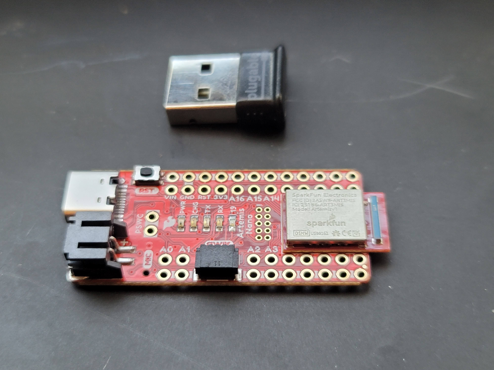
Objective
The objective of this lab was to gain experience working with the Bluetooth module on the Arduino Artemis Nano. This lab involved sending and receiving packets of data between the Arduino and base computer, reading the output, and measuring latency.
Connecting to the Artemis Board
The bleak library was already installed on the virtual machine. At first, I had trouble connecting the Artemis Nano with the Bluetooth module, using main.py. I discovered that I needed to install additional USB libraries onto the virtual machine in order for USB passthrough to function. I also disabled macOS’s Bluetooth behavior by running sudo nvram bluetoothHostControllerSwitchBehavior=never, as suggested on Campuswire. After 3 attempts at running main.py, I received confirmation that Bluetooth connection was established. A strange issue that causes my internal keyboard and trackpad stop working after my mac goes to sleep, started to occur, however.
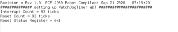
Ping Your Robot
After uncommenting await theRoboot.ping(), the program began to ‘ping-pong’ between the transmitter and receiver small amounts of data to measure the round-trip latency. After a series of 444 pings, the average latency was 138.32 ms. This is approximately three orders of
magnitude higher than USB connection (link), where the average latency can equal 0.125 ms.
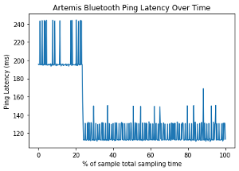
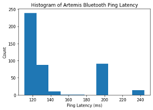
From the histogram and time history of the ping latency, some interesting observations can be made. The latency is aggregated into 2 main blocks, between 200-240 ms, and between 120 and 140 ms. There seems to be a sudden drop in latency after some time, and the latency settles into the lower latency state.
Request a Float
Looking through the robot command framework, I discovered how I could format data types and send them from the Artemis Nano to the computer. At first, I was unsuccessful, but I learned that the byte size must be 2 bytes greater than the size of the byte type, which for a float, would be a total of 6 bytes. I sent over the float, 3.14159265354, and received a similar, but not quite exact return. It is possible that the data is being corrupted or not parsed correctly.
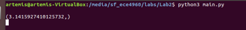
case REQ_FLOAT:
Serial.println("Going to send a float");
//TODO: Put a float (perhaps pi) into a command response and send it.
res_cmd->command_type = GIVE_FLOAT;
((float *)res_cmd->data)[0] = 3.14159265354f;
amdtpsSendData((uint8_t *)res_cmd, 6);
break;
}
Below demonstrates the ping code running:
Test the Data Rate
Now, we modified the bytestream section of the code to include sending and receiving a packets of data. Using some data logging tools, we can see how the Bluetooth module handles this data and whether or not any packets are lost. I used the largest possible 32-bit integer (2^32 – 1) and the largest possible 64-bit integer (2^64 – 1) to fill these values. The latency, found by subtracting the reported times between transmissions in the serial monitor, was averaged and plotted over time and in a histogram. I calculated the percentage of dropped packets by comparing the total number of packets received on the computer (in the linux terminal) and the number of packets sent from the Arduino, which is reported in the serial monitor.
The code below demonstrates how data was created and packaged into a data packet. We also used the unpack function to display this package as a human-readable decimal number. Special attention is necessary for the byte size, as the byte size of the integers, package, and unpacked must all be the same size.
if (bytestream_active)
{
res_cmd->command_type = BYTESTREAM_TX;
res_cmd->length = 54;
//TODO: Put an example of a 32-bit integer and a 64-bit integer
//for the stream. Be sure to add a corresponding case in the
//python program.
// Serial.printf("Stream %d \n", bytestream_active);
uint32_t bit_32 = 2147483648;
uint64_t bit_64 = 9223372036854775806;
memcpy(res_cmd->data,&bit_32,4);
memcpy(res_cmd->data+4,&bit_64,8);
memcpy(res_cmd->data+12,&bit_64,8);
memcpy(res_cmd->data+20,&bit_64,8);
memcpy(res_cmd->data+28,&bit_64,8);
memcpy(res_cmd->data+36,&bit_64,8);
memcpy(res_cmd->data+42,&bit_64,8);
amdtpsSendData((uint8_t *)res_cmd, 54);
// Log time
long t = micros();
Serial.printf("Package: %3d, Time: %3d\n",package,t);
package++;
# Unpack from an example stream that transmits a 2-byte and a
# 4-byte integer as quickly as possible, both little-endian.
if (code == Commands.BYTESTREAM_TX.value):
print(unpack("<IQQQQQQ",data));
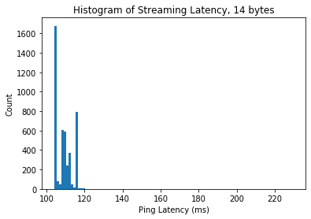
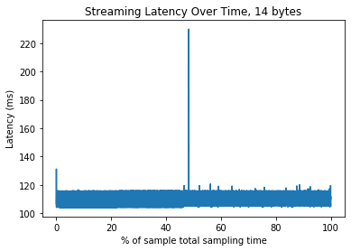
From the first test, a smaller data consists of one 32-bit and one 64-bit integer, for a total of 14 bytes per package. We can see that the average latency is 108.986 ms, and 40.102% of the packets were dropped, which is not a good result.
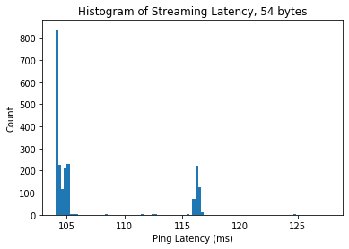
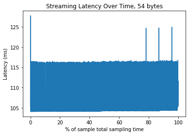
In the second test, a larger data set consists of one 32-bit and six 64-bit integers, for a total of 54 bytes per package. We can see that the average latency is approximately equivalent at 107.053 ms. However, the percentage of packets dropped increased greatly to 70.091%, which means much data was lost. This is expected, as larger packets of data have a higher chance of being corrupted or being lost. However, this may be a problem, as file sizes sent over Bluetooth are likely to be much bigger than 54 bytes, and can contain significant data loss without intelligent processing.
Below demonstrates the send and recieve dialog windows while the program is running:
Lab 3
Characterize Your Car
Simple Measurements
The first types of measurements I collected were simple measurements, i.e, measurements that can be collected without movement of the vehicle. These static measurements are important because they influence our knowledge of the system, or plant, we are creating. The measurements that I prioritized were constants that appeared in our state-space equation of the vehicle. These included the mass, wheelbase, and diameter of the wheel. Other measurements were collected to gain an understanding of the limits of the vehicle -- exterior dimensions, and ground clearance. These are important because they define what type of environment the robot can operate in, such as the minimum distance between two walls.
There were three tools used to collect these simple measurements. They were calipers, a tape measure (for measurements that exceeded the size of the capiers), and a food scale.
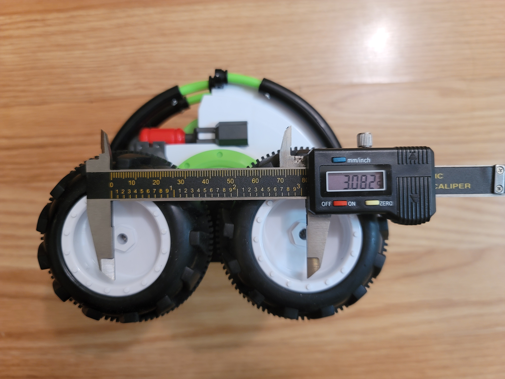
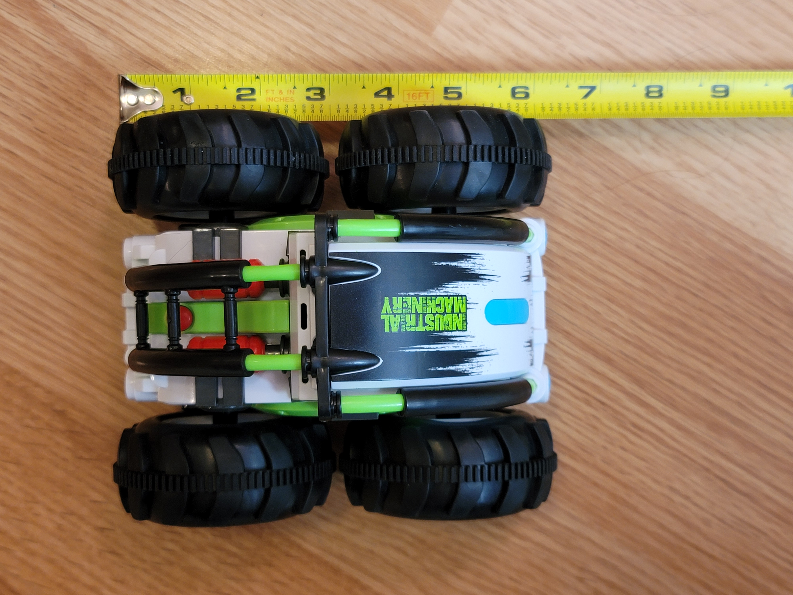
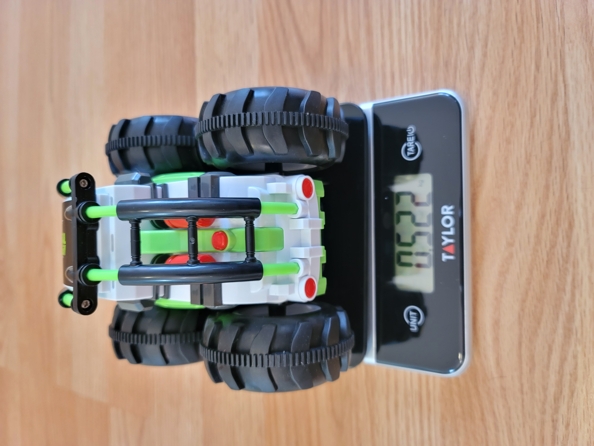
Ten trials of these measurements were collected. The raw test data can be found here. Below is a table, showing the average measurements from these tests.
Test
Weight (inc. battery)
Wheelbase
Wheel Diameter
Length
Width
Height
Ground Clearance
Type of Test
Food Scale
Caliper
Caliper
Tape Measure
Tape Measure
Tape Measure
Caliper
Average Measurment
0.522 kg
3.109 in
3.053 in
6.24 in
5.51 in
4.50 in
0.943 in
Experimental Measurements
The second type of measurements I collected were experimental measurements, i.e. measurements that involved the use of the vehicle’s motors. These required a more complex set-up, involving the use of cameras, masking tape, and movable boards. My motivation for these tests were to understand how motor inputs affect the state of the system, which will be important for feedback control when we program the robot. I focused on measuring longitudinal acceleration, longitudinal velocity, angular velocity, braking distance, climb angle, and maximum pushing force. During these tests, an approximate record of the 700 mAh battery stamina was measured to be about 8 minutes of use, with an average 2 hours 10 minute recharge time. It was difficult to measure battery times since the charging was not constantly monitored, and the robot was not run continuously.
Multiple trials were conducted for each teach, with a focus on repeatability and a low standard deviation. The raw test data can be found here. Below is a table, summarizing the results from these tests.
Test
Average Acceleration
Top Speed
Max Angular Velocity
Braking Distance
Forward Force (all wheels)
Forward Force (left wheels)
Forward Force (right wheels)
Type of Test
13 ft drag strip
13 ft drag strip
360 spin
4 ft drag strip
Food Scale
Food Scale
Food Scale
Average Measurment
7.58 ft/s^2
8.78 ft/s
1.429 rev/s
9.19 ft
2.792 N
1.529 N
1.647 N
Acceleration and Top Speed
The first test was to measure both longitudinal acceleration and longitudinal top speed. This is an important measure of how the motors are able affect forward motion. This test involved creating a 13 foot (the maximum that would fit in my apartement) “drag strip.” The average acceleration was taken by measuring the amount of time the robot took to complete the 13 foot run, using maximum control input into both motors in “fast” mode. The maximum velocity was taken by measuring the number of video frames between the robot’s 10 foot and 13 foot runs, which occurs after the robot has reaches its maximum velocity. Acceleration and velocity were taken using the following equation:
a = 2 * d1 / t^2
v = d2 / (fr * 1/fps)
where d1 = 13 ft, t = seconds elapsed, d2 = 3 ft, fr = number of frames elapsed, and fps = the framerate of the video.
In the below video, the 17 acceleration runs are shown. The acceleration and velocity data were remarkably consistent, however during the acceleration runs there were 2 subsets of data. Acceleration runs were usually above 8 ft/s^2, however for 3 of the runs, the acceleration was approximately 4 ft/s^2. This is an interesting result and is likely due to inconsistencies with the motors, controller, or battery voltage. One observation was that the robot tended to drift towards the left by the end of the drag strip.
Timing was taken using video analysis. Below demonstrates how video frame analysis was conducted using video editing software:
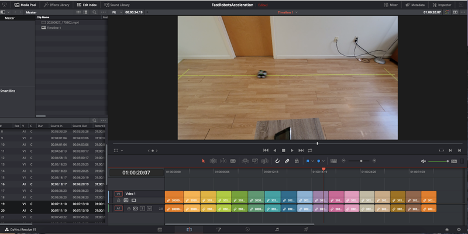
Angular Velocity
Measuring the vehicle’s average angular velocity while in “fast” mode is important to characterize how fast the vehicle will be able to turn. When looking at the state-space-equation, the angular velocity is one of the state variables in the equation. In order to measure the angular velocity, I measured the average amount of time it took for the robot to complete 10 rotations by revering the control inputs. I completed these measurements for both clockwise and counter-clockwise rotations. While there was not much of a variance between angular velocity rates in different directions, the average angular velocity increased by 34% between the first test and the tenth test. Since the first test started on a full battery, we can conclude that spinning about the robot’s axis by reversing motor speeds takes a considerable toll on the battery. The angular velocity was calculated by the below equation:
domega/dt = (# rotations)/t
The video below demonstrates how the angular velocity test was conducted:
Braking
Another test was to measure how long it takes the vehicle to bake. This could be useful to understand how the robot will slow down when it needs to turn or brake for an obstacle. There are two methods of braking: coasting and applying reverse throttle. In this case, I considered braking as coasting, simply releasing remote control inputs so that there was zero input from the motors. Applying reverse throttle did bring the robot to a robot very quickly; however, this tended to upset the balance of the vehicle such that it flipped over, which is highly unreliable to measure. For the braking test, I accelerated the vehicle down a “4 foot drag strip,” and braked the vehicle after 4 feet. The distance until the robot came to a standstill was measured.
The video below demonstrates how the braking test was conducted:
Forward Force
I wanted to calculated how much force the robot is able to exert. This is a function of the motor torque and tire friction. Since there was no tire slip, we can safely relate the forward force to the motor torque. In order to conduct this test, the front of the robot was place against a cardboard box, which was placed against the food scale. This set-up prevented the wheels from contacting the scale. The maximum motor speed was commanded by the remote in while in “fast” operation. Three variants of motor command were conducted: all wheels, left wheels, and right wheels, with the intent of seeing if one motor developed more torque than the others, of which was a 7.7% difference. Some of the limitations of this test include the force that went into deforming the cardboard box, and limitations of using the food scale vertically.
The video below demonstrates how the force test was conducted:
Characterize Your Virtual Robot
Setup the Base Code
Libraries were successfully installed and setup shell script run.
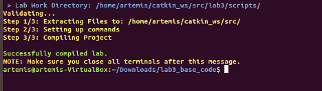
Start the Simulator
By default, when the lab3-manager is started, a stage with a robot opens. There seems to be a map, with a boundary and walls. A robot, shown as a small green squircle, is placed in the middle of the environment.
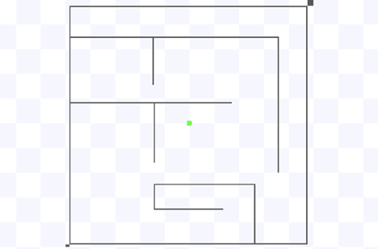
The alternate views allow different information and viewpoint to be drawn in the simulation. The “Data” tab starts a lightly shaded beam from the front of the robot. This shows the field of view of the distance sensor and plots the sensor data returns from the distance sensor onto the screen. The “Perspective camera” changes the view from a top-down view, to a 3-D visualization. This shows the height of the walls and robot to give a greater sense.
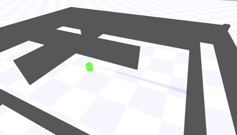
Start the Keyboard Teleoperation Tool
There are 9 keyboard controls. The first row controls the forward velocity (u - fwd-left, i - fwd-straight, o - fwd-right), second row controls zero forward/reverse velocity (j - left, k - stop, l - right), and last row controls reverse velocity (m - rev-left, , - rev-straight, . - rev-right). The robot shows its commanded motion on the simulator.
Perform Tests on Your Virtual Robot
Using the keyboard controls, I started moving the robot. I found the miinimum linear speed = 0.1 and minimum angular speed = 0.3. There does not seem to be a maximum speed, as I was able to command up to 5233. The mouse can be used to drag the robot to anywhere in the simulation space, including outside the exterior boundaries.. When the robot crashes, a warning symbol appears at the site of the collision. The robot disappears and the simulation must be restarted.
Below is a picture of the simulation when the robot crashes into a wall:
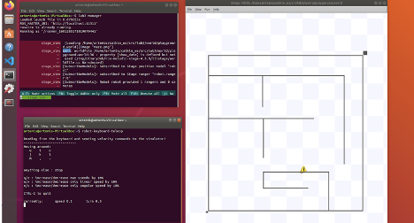
Lab 4
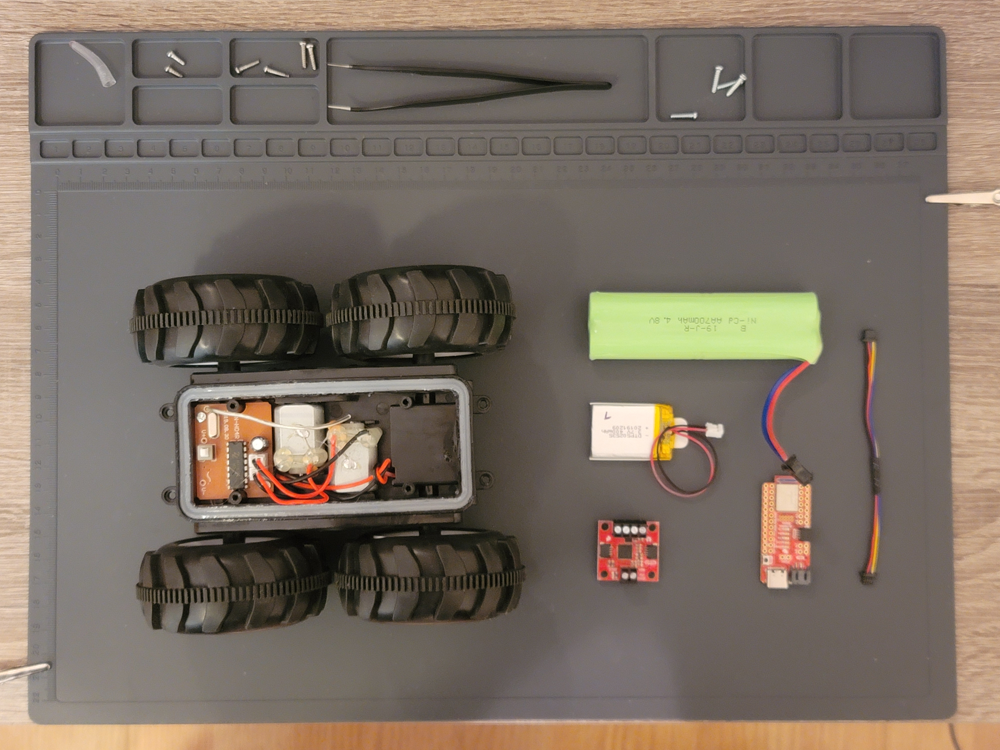
Open-Loop Motor Control on the Vehicle
The Artemis board and motor driver were connected via the provided Qwiic connector, which allows the two boards to connect via I2C.
Connecting Example1_wire
This program operates in a loop scanning across all possible i2c devices and attempts to begin a transmission at that address. If there is no error, it reports that there is a device at that particular address and otherwise, reports that there is no device at the address. This allowed us to find the address of the Serially Controlled Motor Driver (SCMD). For the serial controlled motor driver, the address is Ox5D, which is what is specified on the Sparkfun website for this motor driver.
Take the Car Apart!
This part was quite fun, as we performed “surgery” on the vehicle and transplanted the Artemis board onto the vehicle. I disassembled the chassis, and cut the wire connections between the motors and battery and the RC controller. Next, I reconnected the motor and battery to the motor controller, and connected the motor controller to the Artemis board. While the end pieces look slightly sloppy, I will have a much neater 3-D printed mount for the future. One observation was that twice, the motor wires slipped out from the controller, even after they have been tightened.
Using the provided Sparkfun example code, I changed the I2C address and added my own motor code. Slowly stepped 2 at a time the motor speed, delaying 1 sec at each step. I printed in the serial monitor what the command was and witnessed when the motors speed up. I found that: Lower limit: 72 for left, 84 for right. The motors spun in the directions i intended and the left/ right was the same as I have in the code.
In order to make the robot go straight, I modified the code to take into the minimum speed offset for both motors. This was considered the baseline speed for the motors, and I applied an equal offset of +40 to increase the motor speed so that the vehicle moves at a reasonable velocity. I discovered that the minimum speed on the ground is different than the minimum speed in the air, as additional torque is required to overcome the additional inertia and friction while the robot is on the ground to begin moving. The code runs such that the robot commands forward speed to both motors for 2.5 seconds, after which the robot commands 0 speed. This works well to move the robot about 7 feet, consistently in a straight line.
#define LEFT_MOTOR 0
#define RIGHT_MOTOR 1
#define FWD 0
#define REV 1
#define LEFT_MIN 74+40
#define RIGHT_MIN 84+40
boolean hasRun = false;
int runTime = 2500;
void loop()
{
//pass setDrive() a motor number, direction as 0(call 0 forward) or 1, and level from 0 to 255
myMotorDriver.setDrive( LEFT_MOTOR, 0, 0); //Stop motor
myMotorDriver.setDrive( RIGHT_MOTOR, 0, 0); //Stop motor
while (digitalRead(8) == 0); //Hold if jumper is placed between pin 8 and ground
//***** Operate the Motor Driver *****//
// This walks through all 34 motor positions driving them forward and back.
// It uses .setDrive( motorNum, direction, level ) to drive the motors.
//Smoothly move one motor up to speed and back (drive level 0 to 255)
if (!hasRun){
myMotorDriver.setDrive( LEFT_MOTOR, FWD, LEFT_MIN);
myMotorDriver.setDrive( RIGHT_MOTOR, FWD, RIGHT_MIN);
delay(runTime);
hasRun = true;
}
else{
myMotorDriver.setDrive( LEFT_MOTOR, 0, 0); //Stop motor
myMotorDriver.setDrive( RIGHT_MOTOR, 0, 0); //Stop motor
}
}
Another test for the robot was to command turns. Turns are a little more difficult, but the tightest turn that can be made is completed by commanding the two motors in opposite directions. My plan was to command the robot to move forward, turn 90 degrees left, then continue moving forward. Forward motion was commanded similarly to the straight motion test. However, turns required a little more fine tuning. I found that additional speed was required to avoid the motors from stalling, as compared to forward motion. This makes sense, as the motors have to overcome the “binding” and “scrubbing” that adds additional friction while turning. Also, I found that the minimum speeds in reverse are different than the minimum speeds in forward. After fine tuning and testing to ensure the timing of the turn was complete, I was able to command the robot to perform the left turn. There was much more variation in angle turned than the forward motion test, which is why feedback control would be especially useful in this case.
#define LEFT_MOTOR 0
#define RIGHT_MOTOR 1
#define FWD 0
#define REV 1
#define LEFT_MIN 74+40
#define RIGHT_MIN 84+40
boolean hasRun = false;
void loop()
{
//pass setDrive() a motor number, direction as 0(call 0 forward) or 1, and level from 0 to 255
myMotorDriver.setDrive( LEFT_MOTOR, 0, 0); //Stop motor
myMotorDriver.setDrive( RIGHT_MOTOR, 0, 0); //Stop motor
while (digitalRead(8) == 0); //Hold if jumper is placed between pin 8 and ground
//***** Operate the Motor Driver *****//
// This walks through all 34 motor positions driving them forward and back.
// It uses .setDrive( motorNum, direction, level ) to drive the motors.
//Smoothly move one motor up to speed and back (drive level 0 to 255)
if (!hasRun){
// go straight
myMotorDriver.setDrive( LEFT_MOTOR, FWD, LEFT_MIN);
myMotorDriver.setDrive( RIGHT_MOTOR, FWD, RIGHT_MIN);
delay(1000);
// stop
myMotorDriver.setDrive( LEFT_MOTOR, 0, 0); //Stop motor
myMotorDriver.setDrive( RIGHT_MOTOR, 0, 0); //Stop motor
delay(100);
// turn left
myMotorDriver.setDrive( LEFT_MOTOR, REV, LEFT_MIN+50);
myMotorDriver.setDrive( RIGHT_MOTOR, FWD, RIGHT_MIN+30);
delay(700);
// stop
myMotorDriver.setDrive( LEFT_MOTOR, 0, 0); //Stop motor
myMotorDriver.setDrive( RIGHT_MOTOR, 0, 0); //Stop motor
delay(100);
// go straight
myMotorDriver.setDrive( LEFT_MOTOR, FWD, LEFT_MIN);
myMotorDriver.setDrive( RIGHT_MOTOR, FWD, RIGHT_MIN);
delay(800);
hasRun = true;
}
else{
myMotorDriver.setDrive( LEFT_MOTOR, 0, 0); //Stop motor
myMotorDriver.setDrive( RIGHT_MOTOR, 0, 0); //Stop motor
}
}
I also modified the lourdest frequency code from Lab 1 to control the robot. In this test, the robot moves forward, when a loud frequency is detected.
void loop()
{
if (myPDM.available())
{
myPDM.getData(pdmDataBuffer, pdmDataBufferSize);
uint32_t currentFreq = getLoudest();
//pass setDrive() a motor number, direction as 0(call 0 forward) or 1, and level from 0 to 255
myMotorDriver.setDrive( LEFT_MOTOR, 0, 0); //Stop motor
myMotorDriver.setDrive( RIGHT_MOTOR, 0, 0); //Stop motor
while (digitalRead(8) == 0); //Hold if jumper is placed between pin 8 and ground
//***** Operate the Motor Driver *****//
// This walks through all 34 motor positions driving them forward and back.
// It uses .setDrive( motorNum, direction, level ) to drive the motors.
//Smoothly move one motor up to speed and back (drive level 0 to 255)
// Light the LED if loudest frequency is above threshold
if (currentFreq > lightFreq)
{
myMotorDriver.setDrive( LEFT_MOTOR, FWD, LEFT_MIN);
myMotorDriver.setDrive( RIGHT_MOTOR, FWD, RIGHT_MIN);
delay(runTime);
myMotorDriver.setDrive( LEFT_MOTOR, 0, 0); //Stop motor
myMotorDriver.setDrive( RIGHT_MOTOR, 0, 0); //Stop motor
}
else{
myMotorDriver.setDrive( LEFT_MOTOR, 0, 0); //Stop motor
myMotorDriver.setDrive( RIGHT_MOTOR, 0, 0); //Stop motor
}
}
// Go to Deep Sleep until the PDM ISR or other ISR wakes us.
am_hal_sysctrl_sleep(AM_HAL_SYSCTRL_SLEEP_DEEP);
}
Simulated Open-Loop Motor Control
Set-up the Base Code
All of the code was downloaded and successfully set-up without any faults.
Start the Simulator
After typing ‘lab4-manager,’ the simulator launchches, similarly to the environment for Lab 3. There is a robot placed in an environment with walls.
Jupyter Lab
The Jupyter notebook allowed us to quickly write and test our Python code for controlling the robot in the simulator. The motivation for my code was to move the robot in a rectangle, such that the robot’s path meets the criteria for a rectangle: opposite sides should be parallel and equal in length, and the turns should be 90 degrees. While we cannot exactly measure the accuracy, if the robot completes the entire path by replicating the same exact turns and moving the exact same distance on opposite sides, a good open loop control shall start and end in the same position. The code was created similarly to controlling the actual robot, by commanding and holding a set velocity for a certain amount of time. One difference is that this virtual robot accepts linear and angular velocity commands, while on the robot, we controlled the motor speeds of the left and right motors. This timing was done completely experimentally, until the robot replicated the desired motion. The most difficult portion was the angles, where by experimentation, it was determined turning at 0.5 m/s for 3.1 seconds produced an approximate 90 degree left turn. The robot started at (-2.01,6.00,0.00,0.00) and ended at (-2.08,6.06,0.00,-4.77), which means we were quite successful in open-loop control for a rectangular motion.
I installed the VCNL4040 library, connected the proximety sensor to the Artemis board, and ran the included “Example1_Wire” script. The I2C address is 0x60. This matches the address from the Sparkfun hook-up guide.
I installed the VCNL4040 library, connected the proximety sensor to the Artemis board, and ran the included “Example1_Wire” script. The I2C address is 0x60. This matches the address from the Sparkfun hook-up guide.
Testing Proximity Sensor
From the sparkfun datasheet, it says that this sensor can detect objects up to 20 cm away. It also has no dead zone, and can read all the way up to the face of the sensor. This sensor does not report the exact distance, but is useful to detect if an object is present in front of the proximeter, and if the there is a change in the distance from the sensors. Supposedly, the largest value, 65535, is the value when the object is closest to the sensor, and the minimum, (0-1) is the furthest the sensor can read. In order to map the value of the proximeter to distance values, I performed a test where I sampled data every 2cm, from 0.5 cm to 20 cm, for 10 sec. For all of the tests, an average of 171 readings were taken in 10 seconds, giving a sampling rate of 17.1 Hz. On average it each sensor measurment took about 590 microseconds, with a standard deviation of 0.6. Then I analyzed the proximeter output data and plotted it against the real distance.
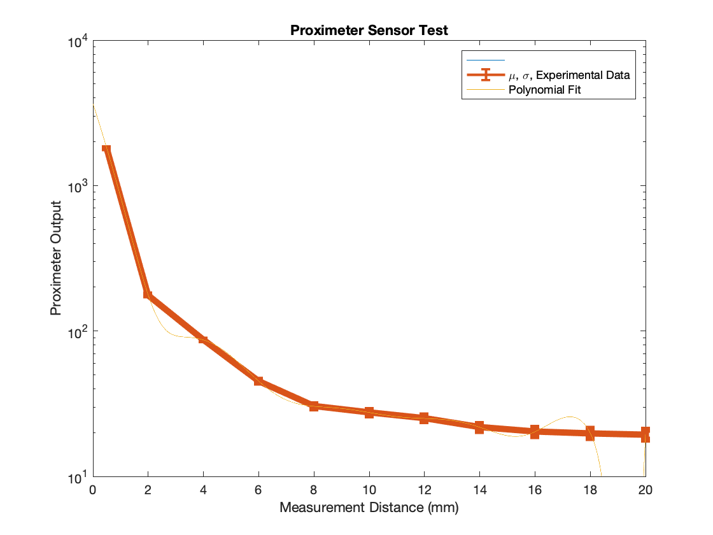
The raw data can be found here. We can see that there is a nonlinear correlation between the output and distance. From the errorbars, the standard deviation is small, and the ‘sweet spot’ is at 4 cm. As the distance increases, so does the standard deviation. Using MATLAB, we can create a polynomial fit for the data. The most reasonable fit came of 10th order:
The corresponding MATLAB script can be found here.
This output is not reliable because along with distance, from my testing, it also varies greatly with surface color reflectivity, and ambient light. This means that this equation is only valid for detection of the tested textured black plastic surface and interior lighting condition. This is not particularly useful for distance, in practice because the robot may detect many different objects in different lighting conditions.
Time of Flight Sensor
I installed the VL53L1 library, connected the ToF sensor to the Artemis board, and ran the included “Example1_Wire” script. The I2C address is 0x29. This matches the address from the Sparkfun hook-up guide.
Running Time of Flight Sensor
From the datasheet, this ToF sensor has a measurement range of (40mm, 4,000mm]. Loading Example1_ReadDistance from the library, the serial monitor outputs the distance to an object in the sensor’s FOV in both millimeters and feet. I tested the sensor within the measurement range, at 200mm to get a sense of its accuracy. It did not seem to be very accurate, as the readings were in the 150mm range, about 25% error. The sensor likely needs calibration.
Calibrating Time of Flight Sensor
I ran the Example7_Calibration script, but for some reason, the program would not run after requesting a distance below 10 cm is detected for 1 second. After debugging the code, I found that 2 calls were not made, which cause the function to be caught in the while(!distanceSensor.checkForDataReady()) loop. I added distanceSensor.startRanging(); and distanceSensor.stopRanging(); within the while loop, which allowed the script to function. After running this function, the calibration offset was found to be 24 mm. I manually added this offset in the setup of my function since the calibration script did not do so for the Apollo board.
distanceSensor.setOffset(24); // Manually set the offset for the sensor
Adjusting Time of Flight Sensor Timing
From Section 2.5.2 of the VL53L1 sensor manual, the function VL53L1_SetMeasurementTimingBudgetMicroSeconds() sets the allowable time to perform one range measurement (between a maximum of 20 ms and 1000 ms), and the function VL53L1_SetInterMeasurementPeriodMilliSeconds() sets the allowable time between two sensor measurements. The default timing budget for the sensor is 100 ms, but I wanted to reduce that to its minimum of 20 ms in order to have a more reactive sensor (greater sampling rate). The default intermeasurment time is also 100 ms, but I reduced this to as little as possible, which is 20 ms, since this time must be greater than or equal to the timing budget. From the tests in Lab 3, I found that the robot’s maximum linear speed is 2.67 m/s. This means that with these new settings, at the robot’s maximum speed, it would travel 5.34 centimeter between both during sensor reading and consecutive readings. Below is the code that I added to the setup() section.
distanceSensor.setTimingBudgetInMs(20); // Manually set the timing budget
distanceSensor.setIntermeasurementPeriod(20); // Manually set the intermeasurment period
Adjusting Time of Flight Sensor Mode
In the above section, we found that the robot may travel up to 10.64 cm between the reading of one measurement and the reading of a consecutive measurement (adding the timing budget and intermeasurment period). From the sensor manual, between the three ranging modes, the short mode has better ambient immunity and can read measurements up to 1.3 m. That means in this mode, the robot should be able to detect an object 1.2 m before reaching the object. Therefore, I chose the short distance mode because this mode seems to have the best ambient performance while still being able to react and avoid collisions. Below is the code that I added to the setup() section.
distanceSensor.setDistanceModeShort(); // Set the sensor to 1.3 m range
Validating Time of Flight Sensor Readings
From the sensor manual, the sensor employes limit logic to detect a valid reading from the sensor. Sigma is the standard deviation of the measurement, and signal is the amplitude (strength) of the return signal that is reflected from the target and detected by the sensor. For a measurement to be flagged as valid, sigma must be less than 15 mm, and signal must be less than 1 Mcps. The limits can be modified or removed to improve the maximum ranging distance, at the expense of standard deviation. I ran Example3_StatusAndRange, and modified the set-up with the settings (from above) that I intended to use for the sensor. In the serial monitor, the code should print either ‘Sigma fail’, ‘Signal Fail’, or ‘Wrapped target fail’ if the limits are exceeded. I tried moving a target with as fast of a frequency as I could (in excess of the maximum speed of the robot) in front of the sensor in an attempt to exceed these limit, but I was unable to, as the sensor always reported ‘Good’ for the range status. I also tried multiple lighting conditions and different object materials in front of the sensor, but was not able to trigger a fail. This means the sensor in these setting will work well with our robot, as it should be able to reliably detect objects, even while the robot is in motion.
Testing Time of Flight Sensor
I devised a test to collect measurements for 5 seconds every at 5 inch intervals (yes, unfortunately, my measuring tape is in US units) from 0 in to the maximum range, of about 55 inches. I did this for 3 different objects: a fabric case, a metal baking sheet, and a wood cutting board. This allowed me to test how sensor performed for objects of different textures, colors, reflectivity, and materials that I would expect to see while in the robot’s environment (inside an apartment). I discovered during testing that the floor started to have an affect on the measurement, and around 30 inches from the target, I no longer could get a reliable reading. This was amended by raising the sensor about 3 inches from the ground. In MATLAB, I created two plots: sensor distance output vs actual distance and sensor reading error vs measurement distance. The error was found by subtracting the actual distance from the sensor reading. The ranging time was on average 20.287 ms with a standard deviation of 1.131 ms, which is 1.4 % greater than what was defined using setTimingBudgetInMs().
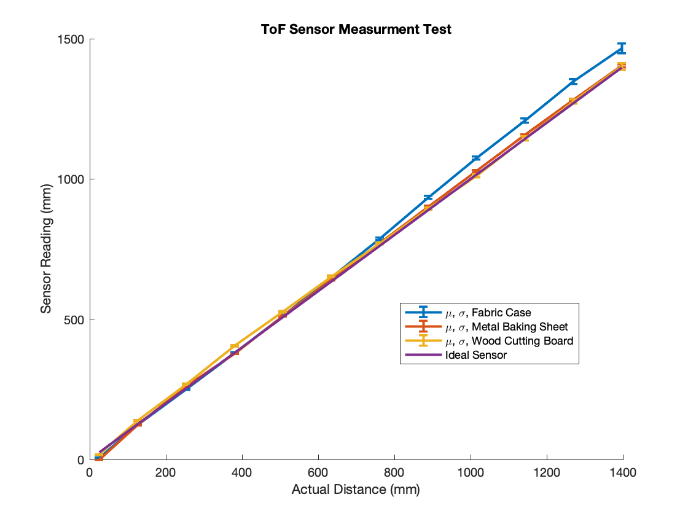
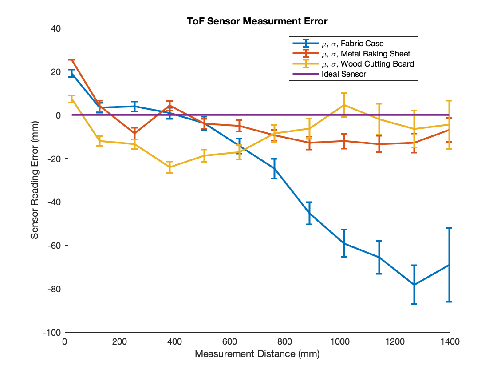
From the plots, we can see that the sensor was fairly accurate, all the way to the short mode maximum of 1.3 m. The sensor also produced fairly linear measurements. As expected, the sensor has a “sweet spot” from about 200 mm to 700 mm. Generally, as the distance to the object increased, both the measurement error and standard deviation increased. The measurement error in all tests was never more than 100 mm. The sensor performed differently between the different materials, with the metal baking sheet having the least error, followed by the wood cutting board and fabric case. The standard deviation increased significantly as the distance increased for the fabric case. I would attribute these differences mainly due to the difference in material reflectivity, as the ToF sensor uses a transmitter and receiver to detect a light pulse. The fabric likely scattered the light the most, contributing to the most amount of error.
The corresponding MATLAB script can be found here.
Obstacle Avoidance
Assembly
I decided to CAD and 3-D print a flexible mounting kit for the robot that attaches via the original chassis screw holes and has spots for future sensors and chassis upgrades. Through many trials, I was able to create a mounting point for the ToF and Proximity sensor that uses M3 screws to adjust its angle. I hope to make these CAD files available to the rest of the class and crowdsource future mounts and upgrades!
Obstacle Avoidance by Braking
First, I created a program called obstacle_avoidance_brake. This program moves the robot forward, and comes to a stop if an obstacle is detected in its path. The goal was to optimize the forward speed, object distance detection, and braking such that the robot moves as fast as possible, and comes to a stop before hitting an object.
The code below demonstrates the functionality of this program. It is split into 3 main parts: sensor measurements, where the robot reads from the distance sensor; control logic, where the robot decides if it should go forward or brake; and control action, where the robot commands the motors to complete the desired control. To improve braking performance, a reverse command is applied as an impulse at only the beginning of a braking event.
void setup() {
// *** Set-up distance sensor *** //
Wire.begin();
Serial.begin(9600);
if (distanceSensor.begin() != 0) //Begin returns 0 on a good init
{
Serial.println("Sensor failed to begin. Please check wiring. Freezing...");
while (1)
;
}
Serial.println("Distance sensor online!");
distanceSensor.setOffset(24); // Manually set the offset for the sensor
distanceSensor.setTimingBudgetInMs(20); // Manually set the timing budget
distanceSensor.setIntermeasurementPeriod(20); // Manually set the intermeasurment period
distanceSensor.setDistanceModeShort(); // Set the sensor to 1.3 m range
// *** Set-up motor driver ***//
pinMode(8, INPUT_PULLUP); //Use to halt motor movement (ground)
// .commInter face is I2C_MODE
myMotorDriver.settings.commInterface = I2C_MODE;
// set address if I2C configuration selected with the config jumpers
myMotorDriver.settings.I2CAddress = 0x5D; //config pattern is "1000" (default) on board for address 0x5D
// set chip select if SPI selected with the config jumpers
myMotorDriver.settings.chipSelectPin = 10;
// initialize the driver get wait for idle
while ( myMotorDriver.begin() != 0xA9 ) //Wait until a valid ID word is returned
{
Serial.println( "ID mismatch, trying again" );
delay(500);
}
Serial.println( "Motor driver ID matches 0xA9" );
// Check to make sure the driver is done looking for slaves before beginning
Serial.print("Waiting for enumeration...");
while ( myMotorDriver.ready() == false );
Serial.println("Done.");
Serial.println();
//Set application settings and enable driver
//Uncomment code for motor 1 inversion
while ( myMotorDriver.busy() ); //Waits until the SCMD is available.
myMotorDriver.inversionMode(1, 1); //invert motor 1
while ( myMotorDriver.busy() );
myMotorDriver.enable(); //Enables the output driver hardware
}
void loop() {
// *** Get sensor measurements *** //
// Distance sensor
distanceSensor.startRanging(); //Write configuration bytes to initiate measurement
while (!distanceSensor.checkForDataReady())
{
delay(1);
}
int distance = distanceSensor.getDistance(); //Get the result of the measurement from the sensor
distanceSensor.clearInterrupt();
distanceSensor.stopRanging();
byte rangeStatus = distanceSensor.getRangeStatus();
// *** Plan control output from data *** //
if (distance > too_close){
// move forward
left_motor_speed = LEFT_MIN + 70;
right_motor_speed = RIGHT_MIN + 70;
brake = false; // do not brake
has_braked = false; // reset has_braked
Serial.println("Move forward");
}
else{
// stop
left_motor_speed = 0;
right_motor_speed = 0;
brake = true; // do brake
Serial.println("Stopping");
}
// *** Perform control action *** //
while (digitalRead(8) == 0); //Hold if jumper is placed between pin 8 and ground
if (rangeStatus == 0){ // perform action only if sensor measurement is valid
if (!has_braked && brake){ // do this only if the braking flag is true and once per braking event
delay(100);
myMotorDriver.setDrive( LEFT_MOTOR, REV, LEFT_MIN + 30);
myMotorDriver.setDrive( RIGHT_MOTOR, REV, RIGHT_MIN + 30);
delay(100);
has_braked = true;
Serial.println("Braking");
}
myMotorDriver.setDrive( LEFT_MOTOR, FWD, left_motor_speed);
myMotorDriver.setDrive( RIGHT_MOTOR, FWD, right_motor_speed);
delay(50);
}
}
Obstacle Avoidance by Turning
Secondly, I created a program called obstacle_avoidance_turn, where the robot moves forward, and instead of bringing the robot to a stop when an object is detected closer than a set value from the distance sensor, the robot turns left until the measured distance is greater than the set value.
The code below is similar to object_avoidance_brake; however turning logic is added.
void setup() {
// *** Set-up distance sensor *** //
Wire.begin();
Serial.begin(9600);
if (distanceSensor.begin() != 0) //Begin returns 0 on a good init
{
Serial.println("Sensor failed to begin. Please check wiring. Freezing...");
while (1)
;
}
Serial.println("Distance sensor online!");
distanceSensor.setOffset(24); // Manually set the offset for the sensor
distanceSensor.setTimingBudgetInMs(20); // Manually set the timing budget
distanceSensor.setIntermeasurementPeriod(20); // Manually set the intermeasurment period
distanceSensor.setDistanceModeShort(); // Set the sensor to 1.3 m range
// *** Set-up motor driver ***//
pinMode(8, INPUT_PULLUP); //Use to halt motor movement (ground)
// .commInter face is I2C_MODE
myMotorDriver.settings.commInterface = I2C_MODE;
// set address if I2C configuration selected with the config jumpers
myMotorDriver.settings.I2CAddress = 0x5D; //config pattern is "1000" (default) on board for address 0x5D
// set chip select if SPI selected with the config jumpers
myMotorDriver.settings.chipSelectPin = 10;
// initialize the driver get wait for idle
while ( myMotorDriver.begin() != 0xA9 ) //Wait until a valid ID word is returned
{
Serial.println( "ID mismatch, trying again" );
delay(500);
}
Serial.println( "Motor driver ID matches 0xA9" );
// Check to make sure the driver is done looking for slaves before beginning
Serial.print("Waiting for enumeration...");
while ( myMotorDriver.ready() == false );
Serial.println("Done.");
Serial.println();
//Set application settings and enable driver
//Uncomment code for motor 1 inversion
while ( myMotorDriver.busy() ); //Waits until the SCMD is available.
myMotorDriver.inversionMode(1, 1); //invert motor 1
while ( myMotorDriver.busy() );
myMotorDriver.enable(); //Enables the output driver hardware
}
void loop() {
// *** Get sensor measurements *** //
// Distance sensor
distanceSensor.startRanging(); //Write configuration bytes to initiate measurement
while (!distanceSensor.checkForDataReady())
{
delay(1);
}
int distance = distanceSensor.getDistance(); //Get the result of the measurement from the sensor
distanceSensor.clearInterrupt();
distanceSensor.stopRanging();
byte rangeStatus = distanceSensor.getRangeStatus();
// *** Plan control output from data *** //
if (distance > too_close){
// move forward
left_motor_speed = LEFT_MIN + 70;
right_motor_speed = RIGHT_MIN + 70;
turn = false; // do not turn
brake = false; // do not brake
has_braked = false; // reset has_braked
Serial.println("Move forward");
}
else{
left_motor_speed = 0;
right_motor_speed = 0;
turn = true; // do turn
brake = true; // do brake
Serial.println("Too Close!");
}
// *** Perform control action *** //
while (digitalRead(8) == 0); //Hold if jumper is placed between pin 8 and ground
if (rangeStatus == 0){ // perform action only if sensor measurement is valid
if (!has_braked && brake){ // do this only if the braking flag is true and once per braking event
delay(100);
myMotorDriver.setDrive( LEFT_MOTOR, REV, LEFT_MIN + 20);
myMotorDriver.setDrive( RIGHT_MOTOR, REV, RIGHT_MIN + 20);
delay(80);
has_braked = true;
Serial.println("Braking");
}
if (turn){
myMotorDriver.setDrive( LEFT_MOTOR, REV, LEFT_MIN + 150);
myMotorDriver.setDrive( RIGHT_MOTOR, FWD, RIGHT_MIN + 150);
delay(100);
Serial.println("Turning");
}
myMotorDriver.setDrive( LEFT_MOTOR, FWD, left_motor_speed);
myMotorDriver.setDrive( RIGHT_MOTOR, FWD, right_motor_speed);
delay(50);
}
}
Some improvements I would add would be adding an averaging filter to avoid erroneous measurements triggering accidental motion, and a complementary filter to combine both the proximeter and ToF sensor together. I would also implement feedback control with the distance sensor to smoothly decrease the motor speed until the robot reaches a set-point of 3 centimeters in front of the distance sensor.
Obstacle Avoidance on the Virtual Robot
The code was downloaded and set-up successfully. In the Jupyter notebook, I tried to replicate the Arduino obstacle_avoidance_turn() as much as possible to see if the code returns similar results to the physical robot. Similarly to the physical robot, the code is broken into 3 main sections: get sensor measurements, plan control action, and perform control output. There are a few differences between the simulator and the physical robot. First, the simulator takes as inputs desired linear and angular velocity instead of values for the left and right motors. Additionally, the simulated robot responded much faster to commands without the 20 ms measurement time of the physical robot. Therefore, the timing and velocity portions were edited to reflect these commands. The robot moves at .5 m/s, and turns left at 1 m/s if an object is detected. The threshold for turning was reduced from the physical robot’s .6 m to 1. After tuning these parameters, the robot was able to successfully avoid obstacles by turning and did not have any collisions after 5 meters of running. I believe these were optimal parameters, as the robot gets close, but does not collide with the walls.
In the video below, we can see the robot approaches the wall a couple of times and just misses a collison. This occurs at very shallow angles, where the wall is not in the field of view of the sensor. This can be mitigated by increasing the sensor field of view, by adding additional distance sensors, rotating the sensor, or by changing the type of sensor. Additionally, more intelligent sensor logic by using filters and incorporating localization may improve object avoidance.
The code for the virtual robot is shown below:
def perform_obstacle_avoidance(robot):
while True:
### Loop variables ###
v = 0
w = 0
too_close = 1
turn = False
brake = False
has_braked = False
### Get sensor measurement ###
distance = robot.get_laser_data()
### Plan control output from data
if (distance > too_close):
v = .5
w = 0
turn = False # do not turn
brake = False # do not brake
has_braked = False # reset has_braked
else:
v = 0
w = 0
turn = True
brake = True
### Perform control action ###
if (not has_braked and brake): # brake
robot.set_vel(0,0)
time.sleep(.01)
has_braked = True
if (turn): # turn
robot.set_vel(0,1)
time.sleep(.2)
robot.set_vel(v,w) # move normally
time.sleep(.05)
perform_obstacle_avoidance(robot)
Lab 6: IMU, PID, Odometry
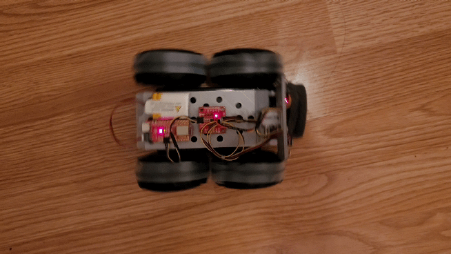
Setting-up the IMU
I connected the IMU using the Qwiic port and scanned the devices using ‘Example1_Wire.’ The IMU was recognized as an I2C device at 0x69. This is what is expected from the datasheet.
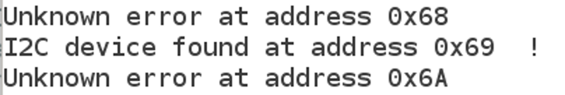
After running ‘Example1_Basics’ from the IMU library, we can see that scaled acceleration (milli-g), gyroscope, and magnetic flux density readings are displayed as 1X3 vectors in units of milli-g, degrees per second, and micro-Tesla, respectively. The last reading is temperature, recorded in Celcius. I noticed that the sampling rate seemed to be quite high, and from the datasheet is up to 100 kHz over I2C in standard mode. Having a high sampling rate is important to reduce time delay when we create a feedback control system.
I moved the IMU and make some observations with the goal of understanding the board’s coordinate systems. I noticed the values were constant while the IMU was stationary, which is as expected. As I moved the accelerometer, the values changed, corresponding to the direction and rotation it was moved. I tried to isolate movements to only one coordinate system and observe the outputs in the serial monitor. By doing this, I discovered the following coordinate system:
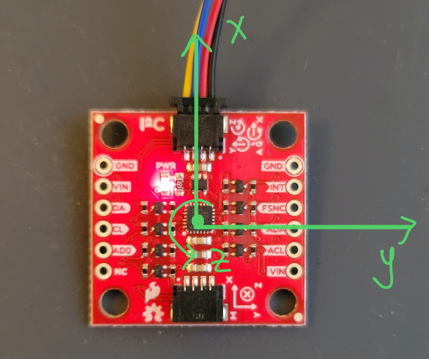
Below is a video of the script being run and the output from the serial monitor.
Accelerometer
Using SerialPlot, I was able to plot changing roll and pitch from at angles [-90, 0, 90] over time. The sensor responds relatively well, but it is apparent there is much noise in the readings. Also, there is some interference when we move the acceleration in only one direction, such as roll = 90, pitch = 0. The pitch reading peaks between -90 and 90 degrees, because, I assume that there is a nonzero reading in that causes the function to approach arctan(infinity). I had originally thought the effect would be reduced by using a complementary low-pass filter, however, it was not. I rewrote the equations, this time substituting an arcsin function for the arctan function. This allowed the function to be more continuous, instead of spiking as the angles were greater than [-90, 90] degrees.
The below code was modified to include the adding pitch and roll measurements:
// returns the pitch in degrees using the acceleration data
double getPitchAccel(){
double aX = getFormattedFloat( myICM.accX(), 5, 2).toDouble();
double aY = getFormattedFloat( myICM.accY(), 5, 2).toDouble();
double aZ = getFormattedFloat( myICM.accZ(), 5, 2).toDouble();
double aMag = sqrt(pow(aX,2) + pow(aY,2) + pow(aZ,2));
double theta = asin(aX/aMag) * 57.295779513;
return theta;
}
// returns the roll in degrees using the acceleration data
double getRollAccel(){
double aX = getFormattedFloat( myICM.accX(), 5, 2).toDouble();
double aY = getFormattedFloat( myICM.accY(), 5, 2).toDouble();
double aZ = getFormattedFloat( myICM.accZ(), 5, 2).toDouble();
double aMag = sqrt(pow(aX,2) + pow(aY,2) + pow(aZ,2));
double phi = asin(aY/aMag) * 57.295779513;
return phi;
}
I then performed data analysis in Python and plotted the signals in the time domain as well as the power spectral density of the roll and pitch test. I found that the frequency of the signals was pretty low, so I tried to filter out frequencies above 40 Hz. I plotted the frequency response for the original signal and the filtered signal for both pitch and roll. After experimentation, I found the best values for the filter were Tau = 0.1, and fc = 0.16, which gave a good combination of low time delay, and filtering high-frequency noise.
Below are the pitch and roll from raw acceleration values plotted in the time and frequency domain, respectively
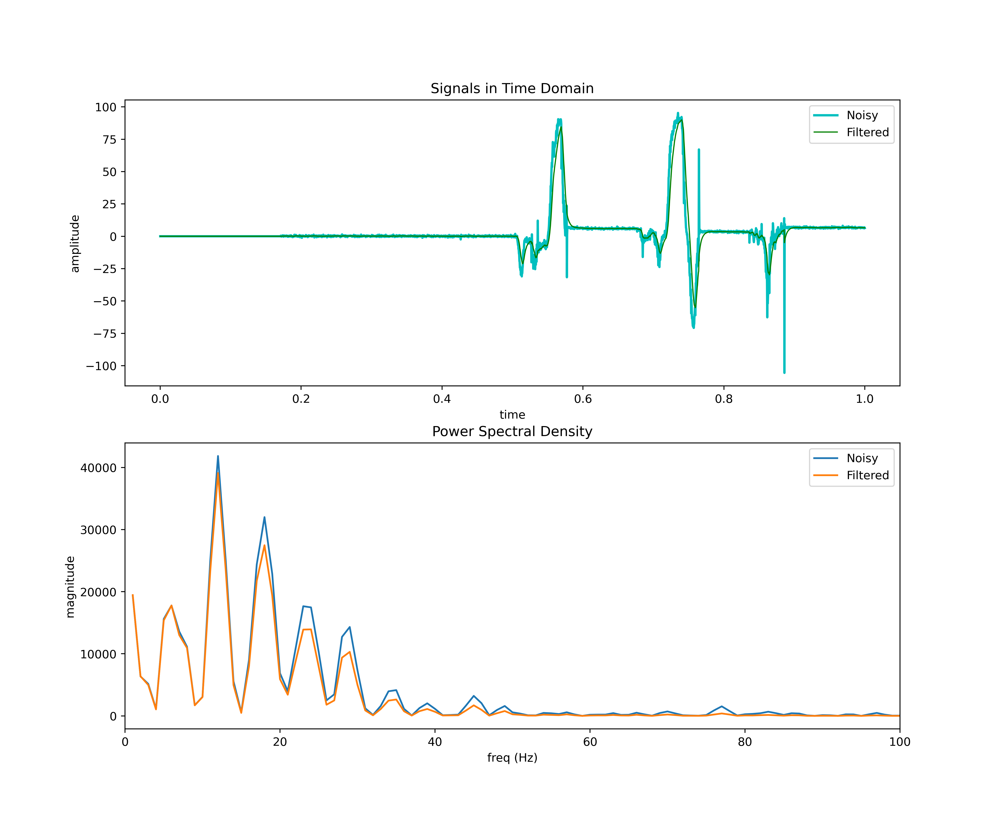
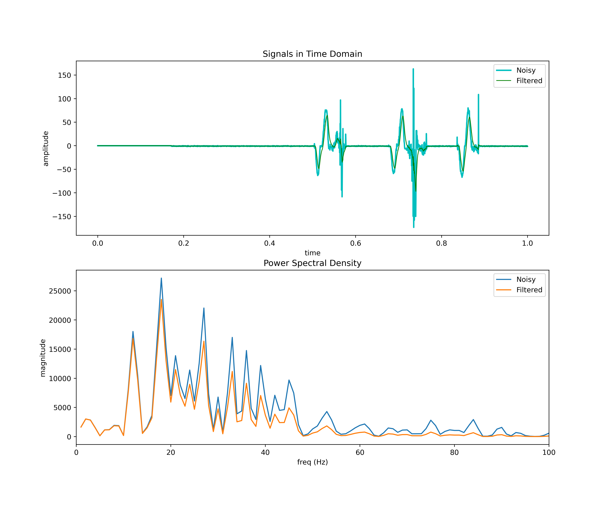
import numpy as np
import matplotlib.pyplot as plt
import csv
# csvFile -- string of filename
# csvCol -- column number (starting at 0) where to parse data from
# tau -- time constant for complementary low pass filter (sec)
# fc -- cutoff freq of complementary low pass filter
def low_pass_filter(csvFile,csvCol,tau,fc):
# open the csv file
data = []
with open(csvFile,'r') as csv_file:
csv_reader = csv.reader(csv_file)
next(csv_reader)
for line in csv_reader:
data.append(float(line[csvCol]))
# load the data
t = np.linspace(0,1,len(data))
dt = 1/len(data)
f = data
# Perform a low pass complimentary filter on the data
RC = 1/(2*np.pi*fc)
alpha = tau/(tau+RC)
f_filter = [f[0]] # intitialize filtered array
for n in range(1,len(f)):
f_n = alpha*f[n] + (1-alpha)*f_filter[n-1]
f_filter.append(f_n)
# Compute the FFT
n = len(t)
f_hat_noisy = np.fft.fft(f,n)
PSD_noisy = f_hat_noisy * np.conj(f_hat_noisy) / n
freq_noisy = (1/(dt*n)) * np.arange(n)
L_noisy = np.arange(1,np.floor(n/2),dtype='int')
f_hat_filter = np.fft.fft(f_filter,n)
PSD_filter = f_hat_filter * np.conj(f_hat_filter) / n
freq_filter = (1/(dt*n)) * np.arange(n)
L_filter = np.arange(1,np.floor(n/2),dtype='int')
# Plot suff
fig,axs = plt.subplots(2,1)
plt.sca(axs[0]) # first plot the frequencies in the time domain
plt.plot(t,f,color='c',LineWidth=2,label='Noisy')
plt.plot(t,f_filter,color='g',LineWidth=1,label='Filtered')
plt.xlabel('time')
plt.ylabel('amplitude')
plt.title('Signals in Time Domain')
plt.legend()
plt.sca(axs[1]) # now plot the power spectral density
plt.plot(freq_noisy[L_noisy],PSD_noisy[L_noisy],label='Noisy')
plt.plot(freq_filter[L_filter],PSD_filter[L_filter],label='Filtered')
plt.xlim(0,100)
plt.xlabel('freq (Hz)')
plt.ylabel('magnitude')
plt.title('Power Spectral Density')
plt.legend()
plt.show()
I implemented the filter into my Arduino code and found that the filter worked well! After a series of tests, moving the sensor from [-90, 90] degrees, and shaking and tapping the sensor, I am satisfied with the filter’s ability to cut noise.
I computed the roll, pitch, and yaw using the gyroscope data. Compared to the accelerometer, this data was much less noisy, since we are effectively filtering by integrating the data. The time delay between the raw acceleration roll and pitch and gyroscope roll and pitch is almost negligible, and there is a time delay when applying the low-pass filter to the acceleration values. I notice that the gyroscope data may have an offset, depending on how the sensor was initialized. If the sensor begins at time zero at zero pitch, roll, and yaw, then there is no offset, since these values are initialized at zero. However, for a non-zero initialization, there is an offset. There is also small drift, caused by small integration errors that gradually increases over time. I also tried decreasing the delay in the system from 30 ms to 10 ms, which effectively increased the sampling rate by 3 x. I noticed a marginal increase in responsiveness, but the sampling rate was originally high enough that I could not visually inspect a difference. If I decreased the delay to 0, I noticed a much higher increase in the accelerometer measurement noise, so I decided that 10 ms was an ideal delay.
// returns the pitch in degrees using the gyro data
double getPitchGyro(){
double omegaY = getFormattedFloat( myICM.gyrY(), 5, 2).toDouble(); // read raw
double t = micros();
double pitchGyro = pitchGyro0 - omegaY*(t-t0_pitch)*1e-6;
pitchGyro0 = pitchGyro; // update variables
t0_pitch = t;
return pitchGyro;
}
// returns the roll in degrees using the gyro data
double getRollGyro(){
double omegaX = getFormattedFloat( myICM.gyrX(), 5, 2).toDouble(); // read raw
double t = micros();
double rollGyro = rollGyro0 + omegaX*(t-t0_roll)*1e-6;
rollGyro0 = rollGyro; // update variables
t0_roll = t;
return rollGyro;
}
// returns the yaw in degrees using the gyro data
double getYawGyro(){
double omegaZ = getFormattedFloat( myICM.gyrZ(), 5, 2).toDouble(); // read raw
double t = micros();
double yawGyro = yawGyro0 + omegaZ*(t-t0_yaw)*1e-6;
yawGyro0 = yawGyro; // update variables
t0_yaw = t;
return yawGyro;
}
I then added a complementary filter, which combines the integrated, high pass filtered gyroscope data with the low pass filtered accelerometer data. This is a much computationally easier method than performing a Kalman filter with the two data. I tuned the value of alpha until I was satisfied with the amount of accuracy, stability, and drift, which was alpha = 0.1 for pitch, and alpha = 0.2 for roll. From the video below, we can see that the complementary filter effectively fuses the outputs from the accelerometer with the gyroscope. We can see that there are much less noise and greater accuracy than the raw accelerometer output, and it is not affected by the gyroscope’s drift over time. However, we can also see that there is more time delay, which could make a controller unstable, as it reduces the phase margin of the loop transfer function.
// fuses angles from accelerometer and gyro
double compFilter(String dataType, double alpha){
double angleAccel = 0;
double angleGyro = 0;
double angle0 = 0;
double angleFilt = 0;
double t = micros();
// set the variables to correct values
if (dataType == "roll"){
angleAccel = lowPass("roll_accel", getRollAccel(), 0.1, 0.16); // get low pass filtered angle from accel values
angleGyro = getRollGyro();
angle0 = rollCompFilt0;
}
else if (dataType == "pitch"){
angleAccel = lowPass("pitch_accel", getPitchAccel(), 0.1, 0.16); // get low pass filtered angle from accel values
angleGyro = getPitchGyro();
angle0 = pitchCompFilt0;
}
// compute the filtered angle value
angleFilt = (angle0 + angleGyro*(t - t0_compFilt)*(1e-6))*(1 - alpha) + angleAccel*alpha; // comp filt formula
// update global variables
if (dataType == "roll"){
rollCompFilt0 = angleFilt;
}
else if (dataType == "pitch"){
pitchCompFilt0 = angleFilt;
}
t0_compFilt = t;
return angleFilt;
}
Magnetometer
I added the magnetometer equations to estimate the yaw angle. Unfortunately, I was not able to reliably estimate the yaw angle because the readings from this quickly jumped between [-180 and 180] degrees, without any intermediary useful data. After many hours of troubleshooting and consulting, I believe my magnetometer is nonfunctional, so I will only use gyroscope data to estimate yaw angle.
// returns the yaw from the magnetometer
double getYawMag(){
// normalize the mag readings
double magnX = getFormattedFloat( myICM.magX(), 5, 2).toDouble()*10e-6; // read raw
double magnY = getFormattedFloat( myICM.magY(), 5, 2).toDouble()*10e-6; // read raw
double magnZ = getFormattedFloat( myICM.magZ(), 5, 2).toDouble()*10e-6; // read raw
double magn_norm = sqrt((magnX*magnX) + (magnY*magnY) + (magnZ*magnZ))*10e-6;
magnX = magnX/magn_norm;
magnY = magnY/magn_norm;
magnZ = magnZ/magn_norm;
// get filtered roll and pitch from accelerometer in radians
double pitchAccelFilt = lowPass("pitch_accel", getPitchAccel(), 0.1, 0.16)*M_PI/180;
double rollAccelFilt = lowPass("roll_accel", getRollAccel(), 0.1, 0.16)*M_PI/180;
double xm = magnX*cos(pitchAccelFilt) - magnY*sin(rollAccelFilt)*sin(pitchAccelFilt) + magnZ*cos(rollAccelFilt)*sin(pitchAccelFilt); // theta=pitch and roll=phi
double ym = magnY*cos(rollAccelFilt) + magnZ*sin(rollAccelFilt);
double yawMag = atan2(ym, xm)*180/M_PI;
return yawMag;
}
PID Control
Ramp Response
I added a function rampMotors() to my code and ramped the motor speeds in opposite directions from 0 to 255. I also used the gyroscope to determine the yaw anglur rate and plotted them at the same time. I tried increasing the delays between motor value changes, but above 50 ms only increased the noise in the yaw rate measurement. I modified the code to utilize bluetooth to send and receive the motor control input and yaw rate, since it is difficult to maintain a wired connection with the robot while it is moving. One thing I noticed was that the bluetooth range was not very far, and would disconnect, if, for example the robot was placed on the floor and the bluetooth module was on a desk. I also created a bash script to pipe the received data into a text file, and a MATLAB script to parse and plot the data. This sped-up my tests exponentially, as I was able to start the bluetooth connection and plot the data with the press of two buttons.
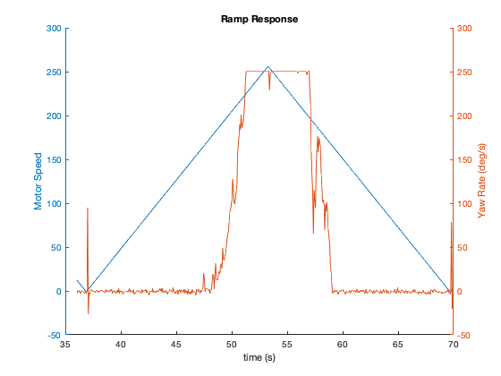
From the above plot, we can see that the maximum rotational rotational speed was 250 deg/sec. This occurs when the motors are set to 196, which is the saturation value for our plant. Our deadband occurs from when the motors are set from 0 to 170, which means our range for the motors is only [170, 196]. Not seen in the graph is that the left motor begins to spin before the right motor. Although the motor spins while the robot is lifted, the motor value for the robot to spin while on the ground (on tile) is much higher. This is likely due to the additional friction and moment of inertia of the entire vehicle.
Below is the bluetooth and ramp code added to the Arduino script:
if (bytestream_active) // send data over Bluetooth
{
res_cmd->command_type = BYTESTREAM_TX;
res_cmd->length = 20;
int motor_data = motor_speed;
double yaw_data = yaw_rate;
double t1 = micros()*1e-6;
memcpy(res_cmd->data,&t1,8);
memcpy(res_cmd->data+8,&motor_data,4);
memcpy(res_cmd->data+12,&yaw_data,8);
amdtpsSendData((uint8_t *)res_cmd, 22);
// Log time
long t = micros();
Serial.printf("Package: %3d, Time: %3d\n",package,t);
package++;
}
// ramps the motors from 0 to 255 to 0
void rampMotors(){
// ramp up
if (ramp_up){
myMotorDriver.setDrive( LEFT_MOTOR, REV, motor_speed);
myMotorDriver.setDrive( RIGHT_MOTOR, FWD, motor_speed);
delay(50);
motor_speed++;
if (motor_speed > 255){
ramp_up = false;
}
}
// ramp down
else{
myMotorDriver.setDrive( LEFT_MOTOR, REV, motor_speed);
myMotorDriver.setDrive( RIGHT_MOTOR, FWD, motor_speed);
delay(50);
motor_speed--;
if (motor_speed < 0){
ramp_up = true;
}
}
}
Below is the bash script used to pipe text from the terminal to a file:
#!/bin/bash
echo "Starting: /media/sf_ece4960/labs/Lab6/main.py"
echo "Saving to: /media/sf_ECE_4960_-_Fast_Robots/Lab6Report/bluetooth_data.txt"
python3 -u /media/sf_ece4960/labs/Lab6/main.py | tee /media/sf_ECE_4960_-_Fast_Robots/Lab6Report/bluetooth_data.txt
Below is the MATLAB script used to plot the data:
clear all
data_array=[];
% parse the data
data = importdata('bluetooth_data.txt');
[n_row,n_col]=size(data);
for i = 1:n_row
text = data{i,1};
% get rid of non float characters
text = strrep(text,'(','');
text = strrep(text,')','');
text = strrep(text,',',' ');
% convert to float
parsed = sscanf(text,'%f')';
% append to array
data_array = [data_array; parsed];
end
% alternatively, load saved data
%data = load('step_response_200.mat');
%data_array = data.data_array;
% find only the relevant parts to plot
t = data_array(:,1);
t_trigger = find(t>=0 & t<=1000);
t_show = t(t_trigger(1):t_trigger(end));
motor_speed_show = data_array(t_trigger(1):t_trigger(end),2);
yaw_rate_show = data_array(t_trigger(1):t_trigger(end),3);
% find the yaw rate during the step response
t_step = find(motor_speed_show > 0);
yaw_rate_step = yaw_rate_show(t_step(1):t_step(end),1);
% plot the stuff
figure()
hold on
yyaxis left
p1 = plot(t_show, motor_speed_show,'LineWidth',2);
ylabel('Motor Speed')
ylim([min(data_array(t_trigger(1):t_trigger(end),2)) - 10, max(data_array(t_trigger(1):t_trigger(end),2)) + 10])
yyaxis right
p2 = plot(t_show, yaw_rate_show);
ylabel('Yaw Rate (deg/s)')
xlabel('time (s)')
title('Step Response, u=220')
hold off
% print the average and std. dev of the yaw rate for the step response
fprintf('Average yaw rate is %5.2f\n', mean(yaw_rate_step));
fprintf('Std dev of yaw rate is %5.2f\n', std(yaw_rate_step));
Minimum Motor Speed for Reliable Rotation
I then tried to find the lowest possible speed the robot can reliably rotate about its own axis. For this, I wrote a function stepMotors() that steps the robot after waiting for 10 seconds, then provides a step input to the motors of the magnitude specified. I tested the robot at motor inputs of [160, 170, 180, 190, 200, 210, 220], which within the valid the range I found through ramping the motors.
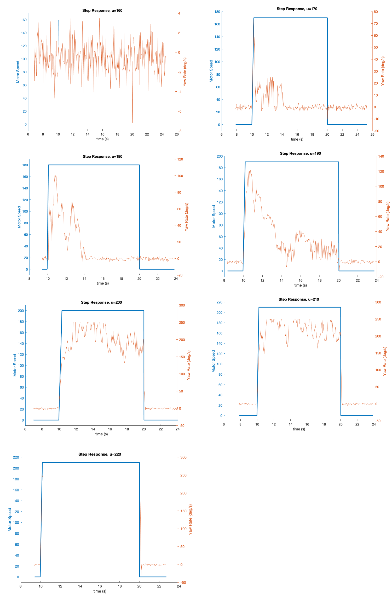
From the above plots, we can see that at u=160, the robot does not move. At u=170 and u=180, the motors barely start moving, and the robot does not complete one whole rotation. The robot also not not continuously move, as in the graphs, the yaw rate approaches 0 after a few seconds. At u = 190, the robot completes one whole rotation, but it is very slow. Although there is positive yaw rate for the whole period, it is not constant. At u = 200, it is the first time that the yaw rate seems more or less constant, averaging about 201 deg/s and standard deviation of 33. At u = 210, the yaw rate is slightly more consistent, with an average of 221 deg/s and a standard deviation of 27. I then added one more test, at u = 220, and at this time, I needed to change the robot’s battery. I noticed the robot was much faster, which shows how so many different parameters (surface friction, weight, battery voltage, etc.) affect the yaw rate of the robot. This is why we need closed loop control to respond to these disturbances. The mean yaw rate from this test was 250 deg/s, and the standard deviation was 0.51, which is a really consistent yaw rate. I concluded that the minimum input to reliably rotate the robot around its own axis was 200, but it depends on our acceptance criteria of the data’s standard deviation.
// steps the motor according to the speed defined by motor_input [0-255] and for time in time_step (s)
void stepMotors(double motor_input, double time_step){
// local variables
double t = micros();
// waits 10 seconds before starting
if ((t - t0_motors >= 10*1e6) && (!motors_start)){
motors_start = true;
t_motors_start = micros();
}
// steps motors after 10 sec for as long as specified
else if ((motors_start) && (t - t_motors_start <= time_step*1e6)){
motor_speed = motor_input;
myMotorDriver.setDrive( LEFT_MOTOR, REV, motor_speed);
myMotorDriver.setDrive( RIGHT_MOTOR, FWD, motor_speed);
delay(50);
}
// otherwise set the motors to speed 0
else{
motor_speed = 0;
myMotorDriver.setDrive( LEFT_MOTOR, REV, motor_speed);
myMotorDriver.setDrive( RIGHT_MOTOR, FWD, motor_speed);
}
}
ToF Sensor Accuracy
The minimum speed of reliable rotation that I found was 201 deg/s. From Lab 5, I found that the ranging time was on average 20.287 ms with a standard deviation of 1.131 ms.
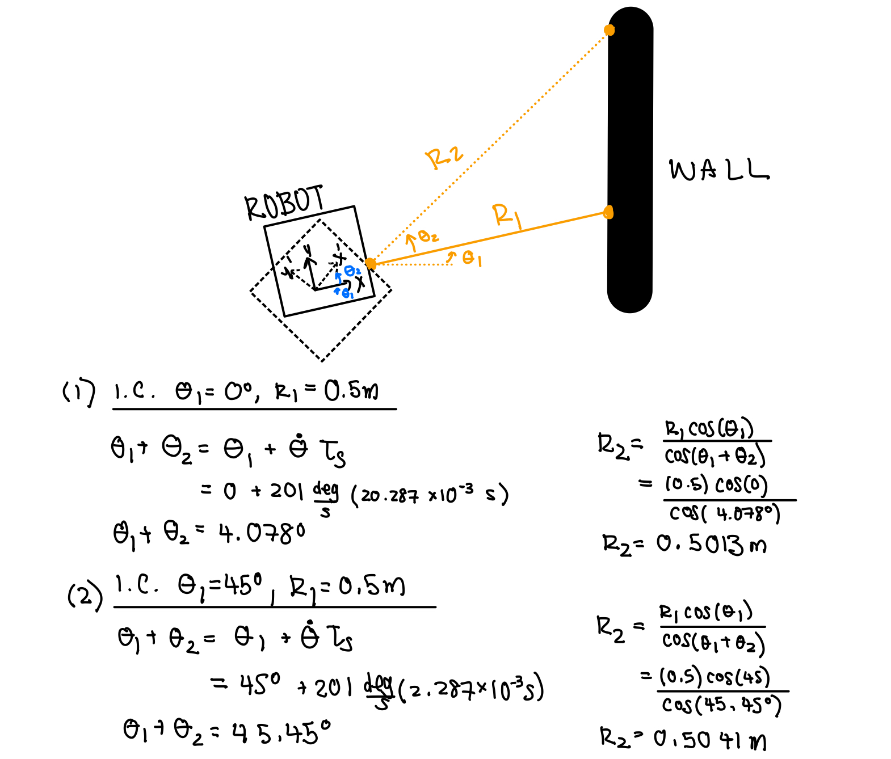
From the above diagram, we calculated calculated the difference in the orientation and ranging difference for two different scenarios, when the robot is 0 degrees and 45 degrees from the wall. The robot will change in orientation by 4.078 degrees at its minimum reliable rotation speed. The amount the ranging distance changes depends on the angle with respect to the wall and increases by 0.26% at 0 degrees (0.5013 m) and 0.82% at 45 degrees (0.5041 m). The ToF sensor has two parameters, “signal and sigma,” which are used to filter invalid measurements. The sigma represents the standard deviation of consecutive measurements, and by default is set to 15 mm. The standard deviation in our two scenarios in the diagram would be 0.9 mm and 2.9 mm, which is within the default sigma value for a valid measurement. Therefore, in this configuration and at the minimum reliable rotation speed of 201 deg/s, the ToF sensor should be able to return valid ranging measurements.
PID Control, Dual Motors
I created a PID controller as a function that takes in as inputs a set-point, the sensor reading, values for kp, ki, kd, and the amount of time in seconds the set-point should be applied for. Although this controller works for proportional, integral, and derivative terms, I decided to just use a P-I control (by setting kd=0) for simplicity and avoiding errors that occur from differentiating noisy yaw rate sensor data. P-I control is chosen over solely P-control because the integral term will allow steady-state error to approach 0. I tried filtering the yaw rate data using a low pass fillter to reduce the effect of noise that is introduced into the feedback path; however, I found that added too much of a time delay, which reduces the stability margins in the system. From the ramp-response, I found that at a maximum, the yaw rate was approximately equal to the motor speed, so I approximated the plant as equal to 1. Note that this is a very rough approximation and should be changed if the robot is on a surface with a different friction coefficient. I made my set-point 200 deg/s because that was the lowest yaw rate that I could reliably rotate about.
I used the Heuristic procedure #2 to tune the PID gains. First, with KD and KI set to 0, I increased the KP value until oscillation, which was at KP = 1.2. I noticed that there was always a non-zero steady-state error, which is expected for only proportional gain. I then decreased the value by 2, KP = 0.6 and added a KI value with the goal of finding the stability-instability boundary. I added anti-windup logic to the code, which stops integrating the error if the output saturates (setting the motors to less than 0 or greater than 255). I noticed that as I increased KI from 1 to 5, the rise time decreased, and I did not notice much of an increase in overshoot. However, as I increased KI over 5, the system began to become unstable. I decided not to use proportional control because there was a lot of noise from the sensor, which might cause instability, and I thought the performance of the P-I controller worked sufficiently well. Therefore, my final control constants are KP = 0.6, KI = 5, and KD = 0. This gave an average yaw rate of 199.82 deg/s with a standard deviation of 5.77 deg/s for a set-point of 200 deg/s, which was my open-loop stable rotation speed. At ½ my open-loop speed, I was able to achieve an average steady-state error of 3.8 deg/s with a standard deviation of 16.38 deg/s. I noticed that it was much harder to maintain slow rotational speeds. The slowest speed I was able to maintain is 50 deg/s. The average steady state error was 2.76 deg/s with a standard deviation of 11.23 deg/s.
From the calculations in the “TOF Sensor Accuracy,” we found that any speed at less than 200 deg/s should produce reliable rotational scans of the system. However, spinning at 200 deg/s might produce more reliable scans than 50 deg/s because I witnessed the robot spin about its axis better at this speed, while at 50 deg/s, the robot also translated, which is hard to measure and compensate for while creating scans.
Below are some plots from various control constants of the system:
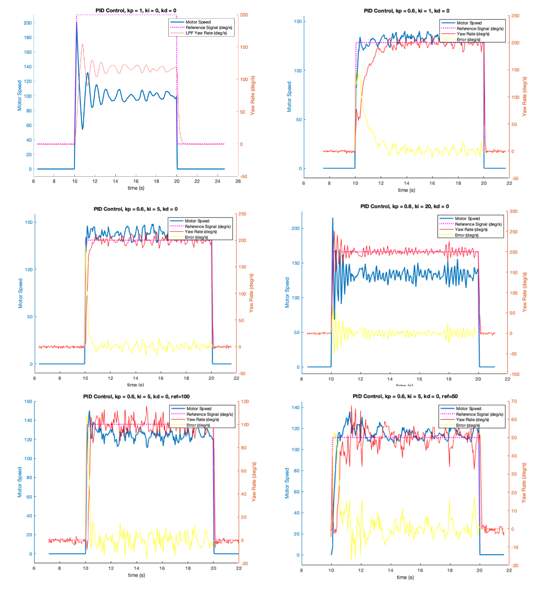
Below is the function added for PID control of both motors:
// PID control. Apply reference signal after waiting 10 seconds for as long as defined by time_step.
void motor_feedback(double set_point, double sensor, double Kp, double Ki, double Kd, double time_step){
double t = micros();
// waits 10 seconds before starting
if ((t - t0_motors >= 10*1e6) && (!motors_start)){
motors_start = true;
t_motors_start = micros();
}
// run PID control
else if((motors_start) && (t - t_motors_start <= time_step*1e6)){
// compute error
double t_PID = micros();
double error = set_point - sensor;
double error_filt = lowPass("yaw_rate_gyro", sensor, 0.1, 0.16);
double integrate_error = integrate_error0 + error*(t_PID - t0_PID)*1e-6;
diff_error = (error_filt - error0)/((t_PID - t0_PID)*1e-6);
// sum controller as the sum of the P, I, D terms
double controller = Kp*error + Ki*integrate_error + Kd*diff_error;
// multiply the controller by the plant
double plant = 1;
double output = controller * plant;
// implement anti-windup
if (output < 0){
motor_speed = 0;
integrate_error = 0;
}
else if (output > 255){
motor_speed = 255;
integrate_error = 0;
}
else{
motor_speed = round(output);
}
// set the motor speed
myMotorDriver.setDrive( LEFT_MOTOR, REV, motor_speed);
myMotorDriver.setDrive( RIGHT_MOTOR, FWD, motor_speed);
delay(5);
// update time, error, and set-point
Serial.print((t_PID - t0_PID)*1e-6);
Serial.println();
error0 = error;
integrate_error0 = integrate_error;
t0_PID = t_PID;
reference = set_point;
}
// otherwise set the motors to speed 0
else{
error0 = 0;
integrate_error0 = 0;
diff_error = 0;
motor_speed = 0;
reference = 0;
myMotorDriver.setDrive( LEFT_MOTOR, REV, motor_speed);
myMotorDriver.setDrive( RIGHT_MOTOR, FWD, motor_speed);
}
}
PID Control Single Motor
I then implemented single_motor_control(), which takes the same code and constants as the dual motor PID control, however, only sets the speed for one of the motors. This is set for either left or right motors (to spin counterclockwise about the z-axis) and sets the other motor to speed 50 to unlock it. With this method, we can potentially control our yaw rate to a lower value with more stability because the single motor runs at a higher speed (in the linear range of the motor) to achieve the same yaw rate as the dual motor. At the slowest speed for the dual motor, 50 deg/s, with using the left motor, the average steady-state error was 1.98 deg/s and the standard deviation was 9.82 deg/s, a decrease of 28% and 13%, respectively. For the right motor, the average steady state error was 2.09 deg/s and the standard deviation was 11.10 deg/s, and improvement of 24% and 1%, respectively. The slowest speed I was able to reliably maintain was 30 deg/s, which maintained an average error of 2.79 (std. dev 8.22) for the left motor, and 40 deg/s for the right motor, which maintained an average error of 2.61 deg/s (std. Dev 10.47).
Given the new slowest speed, 30 deg/s, for the same scenario as in the “ToF Sensor Accuracy” section, the robot would shift in orientation by 0.0686 degrees between ranging sensor measurements. If the robot starts at 5 meters and 0 degrees with respect to an obstacle, the sensor reading would be 0.5000004 m, and at 45 degrees will be 0.5006 m. This gives a standard deviation of 2.53E-7 m and 4.24E-4 m, which is almost negligible. The distance measurements are more likely to be affected by sensor noise than the robot’s movements in this case.
// PID control for single motor, specified by motor. Apply reference signal after waiting 10 seconds for as long as defined by time_step.
void single_motor_feedback(String motor, double set_point, double sensor, double Kp, double Ki, double Kd, double time_step){
double t = micros();
// waits 10 seconds before starting
if ((t - t0_motors >= 10*1e6) && (!motors_start)){
motors_start = true;
t_motors_start = micros();
}
// run PID control
else if((motors_start) && (t - t_motors_start <= time_step*1e6)){
// compute error
double t_PID = micros();
double error = set_point - sensor;
double error_filt = lowPass("yaw_rate_gyro", sensor, 0.1, 0.16);
double integrate_error = integrate_error0 + error*(t_PID - t0_PID)*1e-6;
diff_error = (error_filt - error0)/((t_PID - t0_PID)*1e-6);
// sum controller as the sum of the P, I, D terms
double controller = Kp*error + Ki*integrate_error + Kd*diff_error;
// multiply the controller by the plant
double plant = 1;
double output = controller * plant;
// implement anti-windup
if (output < 0){
motor_speed = 0;
integrate_error = 0;
}
else if (output > 255){
motor_speed = 255;
integrate_error = 0;
}
else{
motor_speed = round(output);
}
// set the motor speed
if (motor == "left"){
myMotorDriver.setDrive( LEFT_MOTOR, REV, motor_speed);
myMotorDriver.setDrive( RIGHT_MOTOR, FWD, 50);
}
else if (motor == "right"){
myMotorDriver.setDrive( LEFT_MOTOR, REV, 50);
myMotorDriver.setDrive( RIGHT_MOTOR, FWD, motor_speed);
}
else{
Serial.print("incorrect motor specifed");
}
delay(5);
// update time, error, and set-point
Serial.print((t_PID - t0_PID)*1e-6);
Serial.println();
error0 = error;
integrate_error0 = integrate_error;
t0_PID = t_PID;
reference = set_point;
}
// otherwise set the motors to speed 0
else{
error0 = 0;
integrate_error0 = 0;
diff_error = 0;
motor_speed = 0;
reference = 0;
myMotorDriver.setDrive( LEFT_MOTOR, REV, motor_speed);
myMotorDriver.setDrive( RIGHT_MOTOR, FWD, motor_speed);
}
}
Lab 7
Grid Localization Using Bayes Filter
I extracted and set-up the base code per the lab instructions. I did have an issue with setting-up the code that was solved by deleting the folders found in the /home/artemis/catkin_ws folder. I made sure to back-up my previous code.
Below is my pseudocode for the Bayes Filter:
# In world coordinates
def compute_control(cur_pose, prev_pose):
""" Given the current and previous odometry poses, this function extracts
the control information based on the odometry motion model.
Args:
cur_pose ([Pose]): Current Pose
prev_pose ([Pose]): Previous Pose
Returns:
[delta_rot_1]: Rotation 1 (degrees)
[delta_trans]: Translation (meters)
[delta_rot_2]: Rotation 2 (degrees)
"""
# starting parameters
x0 = prev_pose[0]
y0 = prev_pose[1]
theta0 = prev_pose[2]*np.pi/180
# final parameters
x = cur_pose[0]
y = cur_pose[1]
theta = cur_pose[2]*np.pi/180
# calculations
delta_rot_1 = (np.arctan2(y-y0, x-x0) - theta0)*180/np.pi
delta_trans = np.sqrt(np.power(y-y0,2) + np.power(x-x0,2))
delta_rot_2 = (theta - theta0 - delta_rot_1*np.pi/180)*180/np.pi
return delta_rot_1, delta_trans, delta_rot_2
# In world coordinates
def odom_motion_model(cur_pose, prev_pose, u):
""" Odometry Motion Model
Args:
cur_pose ([Pose]): Current Pose
prev_pose ([Pose]): Previous Pose
(rot1, trans, rot2) (float, float, float): A tuple with control data in the format
format (rot1, trans, rot2) with units (degrees, meters, degrees)
Returns:
prob [float]: Probability p(x'|x, u)
"""
# alpha contants
alpha1 = 0.2
alpha2 = 0.2
alpha3 = 0.3
alpha4 = 0.3
# noise distrubution model
odom_trans_sigma = loc.odom_trans_sigma
odom_rot_sigma = loc.odom_rot_sigma
# calculate belief bar
bel_bar = compute_control(cur_pose, prev_pose)
delta_rot_1_bar = bel_bar[0]
delta_trans_bar = bel_bar[1]
delta_rot_2_bar = bel_bar[2]
# calculate the belief using the control inputs
delta_rot_1 = u[0]
delta_trans = u[1]
delta_rot_2 = u[2]
# determine the probability
p1 = alpha1*loc.gaussian((delta_rot_1 - delta_rot_1_bar), 0, odom_rot_sigma) + alpha2*loc.gaussian((delta_rot_1 - delta_rot_1_bar), 0, odom_trans_sigma)
p2 = alpha3*loc.gaussian((delta_trans - delta_trans_bar), 0, odom_trans_sigma) + alpha4*loc.gaussian((delta_trans - delta_trans_bar), 0, odom_rot_sigma) + alpha4*loc.gaussian((delta_trans - delta_trans_bar), 0, odom_rot_sigma)
p3 = alpha1*loc.gaussian((delta_rot_2 - delta_rot_2_bar), 0, odom_rot_sigma) + alpha2*loc.gaussian((delta_rot_2 - delta_rot_2_bar), 0, odom_trans_sigma)
# calculate total prob
prob = p1*p2*p3
return prob
def prediction_step(cur_odom, prev_odom, u):
""" Prediction step of the Bayes Filter.
Update the probabilities in loc.bel_bar based on loc.bel from the previous time step and the odometry motion model.
Args:
cur_odom ([Pose]): Current Pose
prev_odom ([Pose]): Previous Pose
u (rot1, trans, rot2) (float, float, float): A tuple with control data in the format
format (rot1, trans, rot2) with units (degrees, meters, degrees)
"""
# get bel(x_(t-1))
bel_prev = loc.bel
# 3-d list to store bel_bar
bel_bar = np.zeros((loc.mapper.MAX_CELLS_X, loc.mapper.MAX_CELLS_Y, loc.mapper.MAX_CELLS_A))
# compute bel_bar for every possible location
for i in range(0, loc.mapper.MAX_CELLS_X_):
for j in range(0, loc.mapper.MAX_CELLS_Y):
for k in range (0, loc.mapper.MAX_CELLS_A):
# find x_t (center coordinate of cell in workd coords)
x_t = loc.mapper.from_map(i, j, k)
# perform bel_bar estimate
bel_bar[i][j][k] = odom_motion_model(x_t, prev_odom, u)*bel_prev[i][j][k]
# update bel_bar
loc.bel_bar = bel_bar
def sensor_model(obs, x_t):
""" This is the equivalent of p(z|x).
Args:
obs ([ndarray]): A 1D array consisting of the measurements made in rotation loop
x_t ([Pose]): location in world coords
Returns:
[ndarray]: Returns a 1D array of size 18 (=loc.OBS_PER_CELL) with the likelihood of each individual measurements
"""
# noise distribution model
sensor_sigma = loc.sensor_sigma
# initialize probability array
prob_array = np.zeros((1, len(obs)))
# get z_k using ray casting
z_star = loc.mapper.get_views(x_t[0], x_t[1], x_t[2])
for k in range(0, len(obs)):
# compute the probability
prob_array[0][k] = loc.gaussian(obs[k], z_star[k], sensor_sigma)
return prob_array
def update_step(obs):
""" Update step of the Bayes Filter.
Update the probabilities in loc.bel based on loc.bel_bar and the sensor model.
Args:
obs ([ndarray]): A 1D array consisting of the measurements made in rotation loop
"""
# get bel_bar
bel_bar = loc.bel_bar
# 3-d list to store bel
bel = np.zeros((loc.mapper.MAX_CELLS_X, loc.mapper.MAX_CELLS_Y, loc.mapper.MAX_CELLS_A))
# compute bel_bar for every possible location
for i in range(0, loc.mapper.MAX_CELLS_X_):
for j in range(0, loc.mapper.MAX_CELLS_Y):
for k in range (0, loc.mapper.MAX_CELLS_A):
# find x_t (center coordinate of cell in workd coords)
x_t = loc.mapper.from_map(i, j, k)
# calculate the sensor probability
prob_sensor = sensor_model(obs, x_t)
# perform the update and normalize
bel[i][j][k] = np.sum(prob_sensor)*bel_bar[i][j][k]/np.sum(bel_bar)
# update bel_bar
loc.bel = bel_bar
Lab 8: Grid Localization Using Bayes Filter
For this lab, I implemented the pseudocode written for Lab 7. A few modifications I made were normalizing the robot’s angles to [-180, 180), correcting the probability step in the odom_motion_model, looping through the previous belief state in the prediction step, and correcting the joint probability of multiple distance measurements. I then spent time removing local variables to make the script use as little memory as possible and improve runtime. I noticed that using as few variables as possible cut the computation time for each time step from about 5 minutes to tens of seconds.
First, I wrote compute_control(). This function determines the control information using the odometry motion model, taking as inputs two consecutive poses and returns rotation 1, translation, and rotation 2.
# In the docstring, "Pose" refers to a tuple (x,y,yaw) in (meters, meters, degrees)
# In world coordinates
def compute_control(cur_pose, prev_pose):
""" Given the current and previous odometry poses, this function extracts
the control information based on the odometry motion model.
Args:
cur_pose ([Pose]): Current Pose
prev_pose ([Pose]): Previous Pose
Returns:
[delta_rot_1]: Rotation 1 (degrees)
[delta_trans]: Translation (meters)
[delta_rot_2]: Rotation 2 (degrees)
"""
""" readable format
# starting parameters
x0 = prev_pose[0]
y0 = prev_pose[1]
theta0 = prev_pose[2]*np.pi/180 # convert to rad
# final parameters
x = cur_pose[0]
y = cur_pose[1]
theta = cur_pose[2]*np.pi/180 # convert to rad
# calculations
delta_rot_1 = loc.mapper.normalize_angle((np.arctan2(y-y0, x-x0) - theta0)*180/np.pi) # convert to deg and normalize
delta_trans = np.sqrt(np.power(y-y0,2) + np.power(x-x0,2))
delta_rot_2 = loc.mapper.normalize_angle((theta - theta0 - delta_rot_1*np.pi/180)*180/np.pi) # convert to deg and normalize
"""
# faster format
delta_rot_1 = loc.mapper.normalize_angle((np.arctan2(cur_pose[1]-prev_pose[1], cur_pose[0]-prev_pose[0]) - prev_pose[2]*np.pi/180)*180/np.pi)
delta_trans = np.sqrt(np.power(cur_pose[1]-prev_pose[1], 2) + np.power(cur_pose[0]-prev_pose[0], 2))
delta_rot_2 = loc.mapper.normalize_angle((cur_pose[2]*np.pi/180 - prev_pose[2]*np.pi/180 - delta_rot_1*np.pi/180)*180/np.pi)
return delta_rot_1, delta_trans, delta_rot_2
Next, I wrote odom_motion_model(), which returns the probability of the current pose, given the prior pose and current control output. First, I computed the control output given the two input poses using compute_controll(). Then, the probability is calculated using the gaussian distribution of the odometry model, with the control input as the mean and knowledge of our system as sigma.
# In world coordinates
def odom_motion_model(cur_pose, prev_pose, u):
""" Odometry Motion Model
Args:
cur_pose ([Pose]): Current Pose
prev_pose ([Pose]): Previous Pose
(rot1, trans, rot2) (float, float, float): A tuple with control data in the format
format (rot1, trans, rot2) with units (degrees, meters, degrees)
Returns:
prob [float]: Probability p(x'|x, u)
"""
""" # readable format
# noise distrubution model
odom_trans_sigma = loc.odom_trans_sigma
odom_rot_sigma = loc.odom_rot_sigma
# calculate belief bar
bel_bar = compute_control(cur_pose, prev_pose)
delta_rot_1_bar = bel_bar[0]
delta_trans_bar = bel_bar[1]
delta_rot_2_bar = bel_bar[2]
# calculate the belief using the control inputs
delta_rot_1 = u[0]
delta_trans = u[1]
delta_rot_2 = u[2]
# determine the probability
p1 = loc.gaussian(delta_rot_1_bar, delta_rot_1, odom_rot_sigma)
p2 = loc.gaussian(delta_trans_bar, delta_trans, odom_trans_sigma)
p3 = loc.gaussian(delta_rot_2_bar, delta_rot_2, odom_rot_sigma)
# calculate total prob assuming independence
prob = p1*p2*p3
"""
# faster format
bel_bar = compute_control(cur_pose, prev_pose)
prob = loc.gaussian(bel_bar[0], u[0], loc.odom_rot_sigma)*loc.gaussian(bel_bar[1], u[1], loc.odom_trans_sigma)*loc.gaussian(bel_bar[2], u[2], loc.odom_rot_sigma)
return prob
The prediction step returns our guess, belief_bar, for the state of the robot= using the odometry motion model in the form of probabilities for each of the cells in the map. For each of the prior states in the space [20X20X18], we check the probability that it could have moved to a new state in the map [20X20X18], given the odom_motion_model and prior belief. Belief_bar is the sum of the prior belief_bar plus the probability from odom_motion_model multiplied by the prior belief. This function uses the most amount of for loops (6) and therefore takes the most amount of computation time.
def prediction_step(cur_odom, prev_odom):
""" Prediction step of the Bayes Filter.
Update the probabilities in loc.bel_bar based on loc.bel from the previous time step and the odometry motion model.
Args:
cur_odom ([Pose]): Current Pose
prev_odom ([Pose]): Previous Pose
"""
""" # readable format
# get bel(x_(t-1))
bel_prev = loc.bel
# 3-d list to store bel_bar
bel_bar = np.zeros((loc.mapper.MAX_CELLS_X, loc.mapper.MAX_CELLS_Y, loc.mapper.MAX_CELLS_A))
# compute u
u = compute_control(cur_odom, prev_odom)
# loop through every possible previous state
for i0 in range(0, loc.mapper.MAX_CELLS_X):
for j0 in range(0, loc.mapper.MAX_CELLS_Y):
for k0 in range(0, loc.mapper.MAX_CELLS_A):
# loop through every possible current state
# only run if the prev belief is nonzero
if (bel_prev[i0, j0, k0] >= 0.0001):
for i in range(0, loc.mapper.MAX_CELLS_X):
for j in range(0, loc.mapper.MAX_CELLS_Y):
for k in range (0, loc.mapper.MAX_CELLS_A):
# find x_t (center coordinate of cell in world coords)
x_0 = loc.mapper.from_map(i0, j0, k0)
x_t = loc.mapper.from_map(i, j, k)
# perform bel_bar estimate
bel_bar[i][j][k] = bel_bar[i][j][k] + odom_motion_model(x_t, x_0, u)*bel_prev[i0][j0][k0]
# update bel_bar
loc.bel_bar = bel_bar
"""
# faster format
# compute u
u = compute_control(cur_odom, prev_odom)
# loop through every possible previous state
for i0 in range(0, loc.mapper.MAX_CELLS_X):
for j0 in range(0, loc.mapper.MAX_CELLS_Y):
for k0 in range(0, loc.mapper.MAX_CELLS_A):
# loop through every possible current state
# only run if the prev belief is nonzero
if (loc.bel[i0, j0, k0] >= 0.0001):
for i in range(0, loc.mapper.MAX_CELLS_X):
for j in range(0, loc.mapper.MAX_CELLS_Y):
for k in range (0, loc.mapper.MAX_CELLS_A):
# perform bel_bar estimate
loc.bel_bar[i][j][k] = loc.bel_bar[i][j][k] + odom_motion_model(loc.mapper.from_map(i, j, k) , loc.mapper.from_map(i0, j0, k0), u)*loc.bel[i0][j0][k0]
Sensor_model() is used to define the probability of each sensor measurement, given the pose of the robot and sensor measurements. This function uses ray-casting to compute what the distance measurements should be for each cell, given our map and wall information. For each sensor measurement [18], we calculate the probability given the Gaussian distribution for the sensor, with the ray casting measurement as the mean and given sigma for the sensor.
def sensor_model(obs, x_t):
""" This is the equivalent of p(z|x).
Args:
obs ([ndarray]): A 1D array consisting of the measurements made in rotation loop
x_t ([Pose]): location in cell coords
Returns:
[ndarray]: Returns a 1D array of size 18 (=loc.OBS_PER_CELL) with the likelihood of each individual measurements
"""
""" # readable format
# noise distribution model
sensor_sigma = loc.sensor_sigma
# initialize probability array
prob_array = np.zeros((1, len(obs)))
# get z_k using ray casting
z_star = loc.mapper.get_views(x_t[0], x_t[1], x_t[2])
# loop through each individual measurement
for k in range(0, len(obs)):
# compute the probability
prob_array[0][k] = loc.gaussian(obs[k], z_star[k], sensor_sigma)
return prob_array
"""
# faster format
# initialize probability array
prob_array = np.zeros((1, len(obs)))
# get z_k using ray casting
z_star = loc.mapper.get_views(x_t[0], x_t[1], x_t[2])
# loop through each individual measurement
for k in range(0, len(obs)):
# compute the probability
prob_array[0][k] = loc.gaussian(obs[k], z_star[k], loc.sensor_sigma)
return prob_array
Finally, the update step combines our prediction, bel_bar with the sensor information, allowing us to fuse together our knowledge from the prior state estimate, odometry information, and distance sensor measurement to obtain a new state estimate. The update step loops through each of the cells in the map [20X20X18] and finds the probability of the state (belief), given the probability from the sensor model and belief_bar. Also, belief is normalized by dividing each unit by the sum of belief.
To return our estimate for the pose, we plot the state with the highest belief, which is plotted below, for 25 defined control inputs.
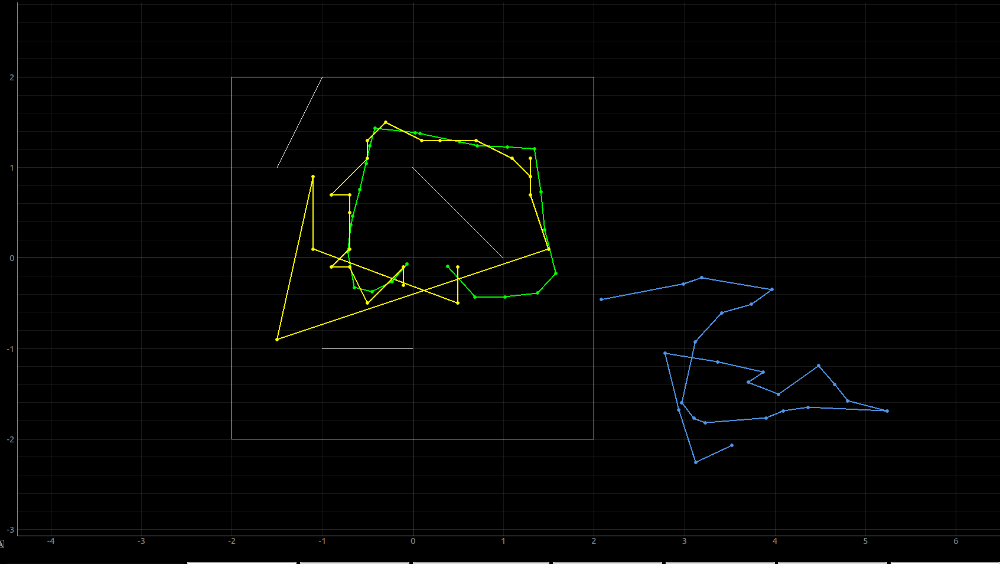
Overall, the runtime for 25-time steps was 6 minutes, 37 seconds. One thing that I noticed was that it took 5-time steps before the filter converged on a “visually correct” pose. My guess is that in the first few steps, the point with the highest probability was plotted, even though it did not match the solution. However, it was interesting to see how slowly, the pose estimate seemed to become better and better, with decreasing error. The final position error was (0.035, 0.231, 2.329). The largest error occurred in the angle measurement, as we were limited to 20 degrees of resolution. The Recursive Bayes Filter was much better than the odometry estimate of the pose was not even on the map. The accuracy is also limited by the grid size that we used, as a finer mesh size would more accurate, at the expense of an exponential increase in processing time.
Below is a video of the Recursive Bayes Filter through the 25-time steps in the simulated environment: